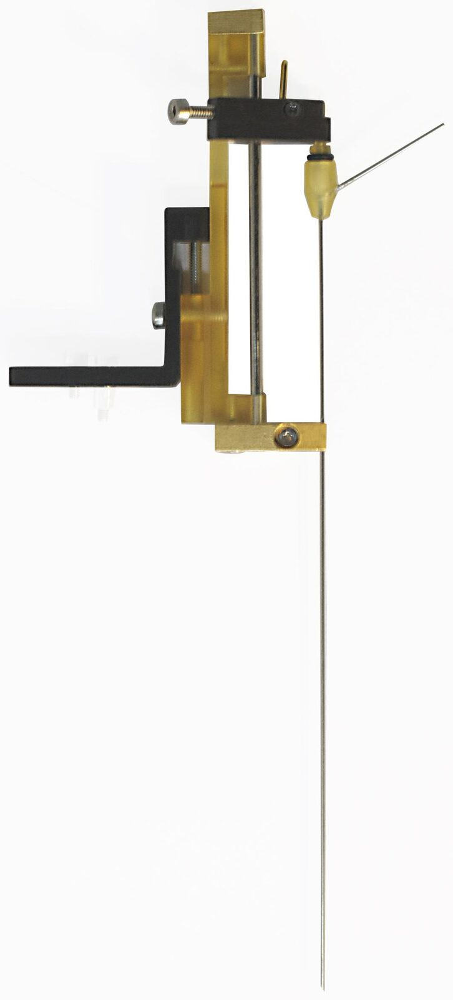
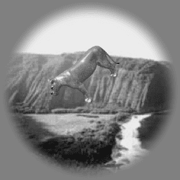
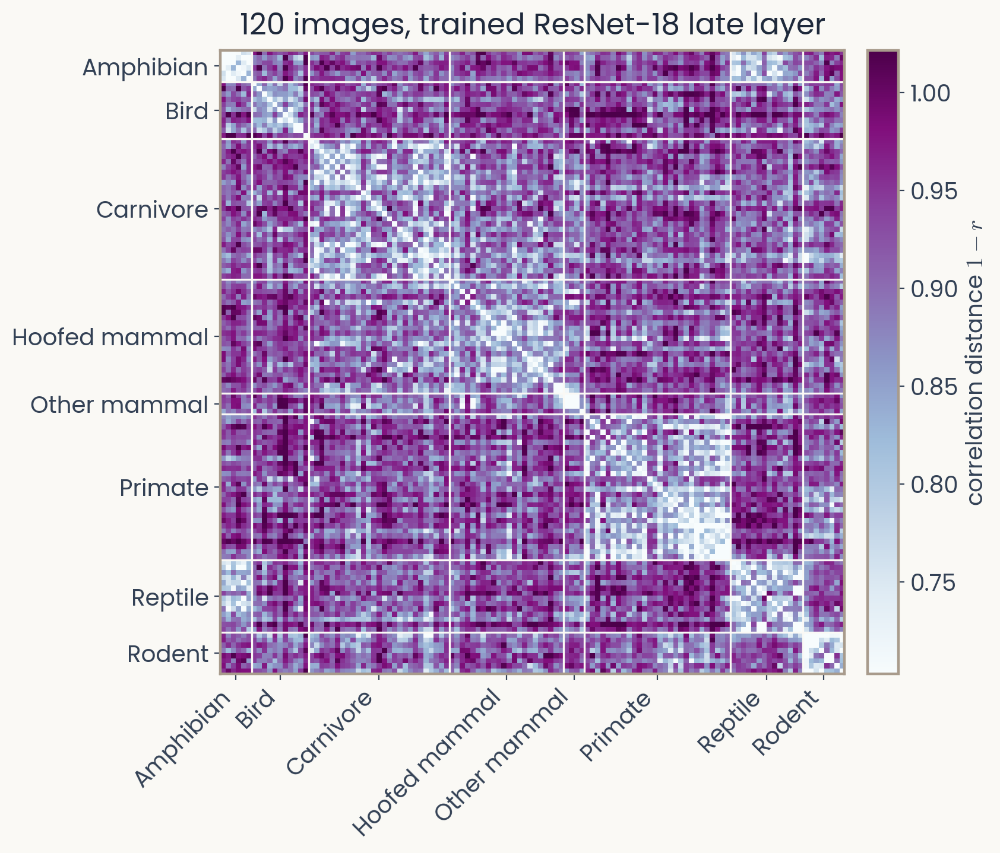

Representations, spaces & metrics
Reader-friendly version of the 45 lecture slides: the lecture content in normal flow, with figure descriptions and data tables where the figure carries data. Open the presentation.
Notation: whole vectors use bold lowercase letters; scalar components use regular italic letters; matrices use bold uppercase. A, B and C label objects in the worked examples.
Slide 1

Representations, spaces & metrics
Slide 2
Before we start
- Minute paper 1: thank you
- Two wishes: build and train models yourselves; understand where brains and AI agree and differ. Both start today
- Two worries: time, and rusty or absent Python. The recitations exist for that
- Recitation tonight, Tuesday 6:30–7:50 PM (room on Canvas)
- TA-led and optional
- Tonight: Python bootcamp
- Strongly encouraged if you have not programmed much, or not in Python
- Slides and notes on Canvas
- No need to take notes
- Reader-friendly version linked from the title slide
Slide 3
What does a brain or network represent?
Three tigers. Which two are most alike? Two systems, two answers. What does each look at?

Three tiger photographs A, B and C from the assignment image set. Below them, two rows of checks and crosses: one system pairs A with B; another pairs B with C. A and B are near mirror images of one another; B and C are both walking with the head lowered
Open full-size figureSlide 4
A representation stands for something
“This is not a pipe.”
- A depiction is not the object
- It stands for it: a representation

René Magritte’s 1929 painting The Treachery of Images, at LACMA. A brown smoking pipe on a beige ground above a cursive French inscription, “Ceci n’est pas une pipe” (“This is not a pipe”). The painting separates an object from an image that depicts it. Photograph © Museum Associates/LACMA; artwork © C. Herscovici/Artists Rights Society (ARS), New York.
Open full-size figureSlide 5
The representation in an image
Slide 6
Color images: three values per pixel

Left: the 224 by 224 color tiger photograph. Middle: its red, green and blue channels, labelled 224 × 224 × 3 = 150,528 values. Right: the three channel values of a selected pixel, the same values divided by 255, a color swatch and one bar per channel.
Open full-size figureSlide 7
Grayscale: one value per pixel
Vectorization: the 28 × 28 array is read row by row into a single list of 784 numbers, a vector. Distances and averages are defined on vectors.

Left: the 224 by 224 color tiger photograph, with the 8 by 8 region behind the selected pixel highlighted. Middle: the 28 by 28 grayscale intensity array, labelled 784 values. Right: the vector bold x, listed as its first four entries, 18, 27, 26 and 18, followed by an ellipsis, with the selected entry and its Python index.
Open full-size figureNumeric alternative to this figure
| Pixel index (1-based) | Intensity (0–255) |
|---|---|
| 1 | 18 |
| 2 | 27 |
| 3 | 26 |
| 4 | 18 |
| 5 | 20 |
| 6 | 32 |
| 7 | 27 |
| 8 | 37 |
| 9 | 33 |
| 10 | 33 |
| 11 | 59 |
| 12 | 46 |
| 13 | 53 |
| 14 | 43 |
| 15 | 40 |
| 16 | 32 |
| 17 | 54 |
| 18 | 35 |
| 19 | 48 |
| 20 | 49 |
| 21 | 23 |
| 22 | 25 |
| 23 | 27 |
| 24 | 21 |
| 25 | 24 |
| 26 | 25 |
| 27 | 17 |
| 28 | 19 |
| 29 | 22 |
| 30 | 21 |
| 31 | 32 |
| 32 | 28 |
| 33 | 26 |
| 34 | 37 |
| 35 | 28 |
| 36 | 38 |
| 37 | 49 |
| 38 | 44 |
| 39 | 70 |
| 40 | 77 |
| 41 | 84 |
| 42 | 74 |
| 43 | 57 |
| 44 | 48 |
| 45 | 44 |
| 46 | 55 |
| 47 | 41 |
| 48 | 33 |
| 49 | 35 |
| 50 | 29 |
| 51 | 33 |
| 52 | 30 |
| 53 | 29 |
| 54 | 37 |
| 55 | 31 |
| 56 | 34 |
| 57 | 39 |
| 58 | 36 |
| 59 | 45 |
| 60 | 46 |
| 61 | 51 |
| 62 | 55 |
| 63 | 56 |
| 64 | 66 |
| 65 | 54 |
| 66 | 57 |
| 67 | 94 |
| 68 | 82 |
| 69 | 86 |
| 70 | 57 |
| 71 | 69 |
| 72 | 60 |
| 73 | 50 |
| 74 | 51 |
| 75 | 43 |
| 76 | 43 |
| 77 | 40 |
| 78 | 49 |
| 79 | 42 |
| 80 | 40 |
| 81 | 32 |
| 82 | 41 |
| 83 | 33 |
| 84 | 30 |
| 85 | 60 |
| 86 | 49 |
| 87 | 46 |
| 88 | 58 |
| 89 | 87 |
| 90 | 99 |
| 91 | 107 |
| 92 | 107 |
| 93 | 102 |
| 94 | 85 |
| 95 | 94 |
| 96 | 65 |
| 97 | 55 |
| 98 | 56 |
| 99 | 69 |
| 100 | 59 |
| 101 | 63 |
| 102 | 58 |
| 103 | 42 |
| 104 | 49 |
| 105 | 50 |
| 106 | 57 |
| 107 | 55 |
| 108 | 34 |
| 109 | 40 |
| 110 | 45 |
| 111 | 40 |
| 112 | 36 |
| 113 | 75 |
| 114 | 63 |
| 115 | 86 |
| 116 | 90 |
| 117 | 65 |
| 118 | 61 |
| 119 | 81 |
| 120 | 84 |
| 121 | 126 |
| 122 | 124 |
| 123 | 116 |
| 124 | 64 |
| 125 | 56 |
| 126 | 59 |
| 127 | 55 |
| 128 | 63 |
| 129 | 69 |
| 130 | 60 |
| 131 | 45 |
| 132 | 47 |
| 133 | 51 |
| 134 | 46 |
| 135 | 44 |
| 136 | 47 |
| 137 | 36 |
| 138 | 38 |
| 139 | 32 |
| 140 | 20 |
| 141 | 82 |
| 142 | 84 |
| 143 | 70 |
| 144 | 41 |
| 145 | 47 |
| 146 | 48 |
| 147 | 48 |
| 148 | 68 |
| 149 | 77 |
| 150 | 95 |
| 151 | 113 |
| 152 | 108 |
| 153 | 92 |
| 154 | 79 |
| 155 | 78 |
| 156 | 89 |
| 157 | 101 |
| 158 | 75 |
| 159 | 50 |
| 160 | 66 |
| 161 | 64 |
| 162 | 63 |
| 163 | 52 |
| 164 | 54 |
| 165 | 46 |
| 166 | 34 |
| 167 | 41 |
| 168 | 44 |
| 169 | 106 |
| 170 | 98 |
| 171 | 45 |
| 172 | 47 |
| 173 | 55 |
| 174 | 46 |
| 175 | 62 |
| 176 | 61 |
| 177 | 69 |
| 178 | 75 |
| 179 | 65 |
| 180 | 83 |
| 181 | 134 |
| 182 | 127 |
| 183 | 108 |
| 184 | 63 |
| 185 | 131 |
| 186 | 123 |
| 187 | 125 |
| 188 | 124 |
| 189 | 85 |
| 190 | 73 |
| 191 | 45 |
| 192 | 91 |
| 193 | 64 |
| 194 | 44 |
| 195 | 43 |
| 196 | 42 |
| 197 | 146 |
| 198 | 42 |
| 199 | 51 |
| 200 | 58 |
| 201 | 51 |
| 202 | 65 |
| 203 | 50 |
| 204 | 77 |
| 205 | 66 |
| 206 | 77 |
| 207 | 72 |
| 208 | 77 |
| 209 | 85 |
| 210 | 90 |
| 211 | 78 |
| 212 | 86 |
| 213 | 105 |
| 214 | 145 |
| 215 | 101 |
| 216 | 125 |
| 217 | 79 |
| 218 | 73 |
| 219 | 123 |
| 220 | 171 |
| 221 | 73 |
| 222 | 40 |
| 223 | 37 |
| 224 | 39 |
| 225 | 98 |
| 226 | 43 |
| 227 | 45 |
| 228 | 63 |
| 229 | 53 |
| 230 | 61 |
| 231 | 56 |
| 232 | 60 |
| 233 | 83 |
| 234 | 69 |
| 235 | 76 |
| 236 | 86 |
| 237 | 89 |
| 238 | 84 |
| 239 | 106 |
| 240 | 104 |
| 241 | 99 |
| 242 | 93 |
| 243 | 147 |
| 244 | 176 |
| 245 | 113 |
| 246 | 95 |
| 247 | 154 |
| 248 | 143 |
| 249 | 39 |
| 250 | 34 |
| 251 | 33 |
| 252 | 40 |
| 253 | 109 |
| 254 | 45 |
| 255 | 37 |
| 256 | 54 |
| 257 | 63 |
| 258 | 58 |
| 259 | 69 |
| 260 | 54 |
| 261 | 69 |
| 262 | 74 |
| 263 | 74 |
| 264 | 81 |
| 265 | 73 |
| 266 | 103 |
| 267 | 108 |
| 268 | 105 |
| 269 | 84 |
| 270 | 124 |
| 271 | 127 |
| 272 | 183 |
| 273 | 148 |
| 274 | 119 |
| 275 | 190 |
| 276 | 153 |
| 277 | 76 |
| 278 | 49 |
| 279 | 41 |
| 280 | 48 |
| 281 | 83 |
| 282 | 51 |
| 283 | 39 |
| 284 | 50 |
| 285 | 68 |
| 286 | 58 |
| 287 | 66 |
| 288 | 61 |
| 289 | 60 |
| 290 | 74 |
| 291 | 60 |
| 292 | 69 |
| 293 | 98 |
| 294 | 113 |
| 295 | 113 |
| 296 | 116 |
| 297 | 81 |
| 298 | 158 |
| 299 | 124 |
| 300 | 121 |
| 301 | 102 |
| 302 | 112 |
| 303 | 144 |
| 304 | 148 |
| 305 | 121 |
| 306 | 45 |
| 307 | 38 |
| 308 | 41 |
| 309 | 73 |
| 310 | 39 |
| 311 | 39 |
| 312 | 53 |
| 313 | 77 |
| 314 | 65 |
| 315 | 50 |
| 316 | 71 |
| 317 | 58 |
| 318 | 58 |
| 319 | 66 |
| 320 | 67 |
| 321 | 103 |
| 322 | 115 |
| 323 | 124 |
| 324 | 154 |
| 325 | 87 |
| 326 | 176 |
| 327 | 140 |
| 328 | 117 |
| 329 | 83 |
| 330 | 95 |
| 331 | 134 |
| 332 | 189 |
| 333 | 115 |
| 334 | 42 |
| 335 | 47 |
| 336 | 49 |
| 337 | 117 |
| 338 | 22 |
| 339 | 44 |
| 340 | 54 |
| 341 | 74 |
| 342 | 82 |
| 343 | 43 |
| 344 | 67 |
| 345 | 45 |
| 346 | 60 |
| 347 | 73 |
| 348 | 72 |
| 349 | 104 |
| 350 | 125 |
| 351 | 129 |
| 352 | 197 |
| 353 | 88 |
| 354 | 136 |
| 355 | 122 |
| 356 | 109 |
| 357 | 97 |
| 358 | 110 |
| 359 | 140 |
| 360 | 150 |
| 361 | 63 |
| 362 | 52 |
| 363 | 39 |
| 364 | 42 |
| 365 | 152 |
| 366 | 32 |
| 367 | 71 |
| 368 | 56 |
| 369 | 59 |
| 370 | 72 |
| 371 | 36 |
| 372 | 48 |
| 373 | 61 |
| 374 | 83 |
| 375 | 82 |
| 376 | 74 |
| 377 | 103 |
| 378 | 125 |
| 379 | 125 |
| 380 | 186 |
| 381 | 117 |
| 382 | 146 |
| 383 | 139 |
| 384 | 144 |
| 385 | 187 |
| 386 | 184 |
| 387 | 165 |
| 388 | 102 |
| 389 | 43 |
| 390 | 38 |
| 391 | 29 |
| 392 | 27 |
| 393 | 185 |
| 394 | 28 |
| 395 | 108 |
| 396 | 58 |
| 397 | 88 |
| 398 | 71 |
| 399 | 39 |
| 400 | 40 |
| 401 | 44 |
| 402 | 78 |
| 403 | 96 |
| 404 | 81 |
| 405 | 115 |
| 406 | 153 |
| 407 | 178 |
| 408 | 212 |
| 409 | 124 |
| 410 | 189 |
| 411 | 119 |
| 412 | 119 |
| 413 | 199 |
| 414 | 190 |
| 415 | 136 |
| 416 | 100 |
| 417 | 79 |
| 418 | 36 |
| 419 | 31 |
| 420 | 30 |
| 421 | 41 |
| 422 | 30 |
| 423 | 35 |
| 424 | 48 |
| 425 | 55 |
| 426 | 62 |
| 427 | 42 |
| 428 | 34 |
| 429 | 57 |
| 430 | 81 |
| 431 | 82 |
| 432 | 92 |
| 433 | 138 |
| 434 | 188 |
| 435 | 176 |
| 436 | 202 |
| 437 | 150 |
| 438 | 125 |
| 439 | 115 |
| 440 | 83 |
| 441 | 96 |
| 442 | 80 |
| 443 | 66 |
| 444 | 64 |
| 445 | 53 |
| 446 | 47 |
| 447 | 38 |
| 448 | 55 |
| 449 | 34 |
| 450 | 29 |
| 451 | 53 |
| 452 | 59 |
| 453 | 65 |
| 454 | 74 |
| 455 | 42 |
| 456 | 49 |
| 457 | 71 |
| 458 | 85 |
| 459 | 80 |
| 460 | 114 |
| 461 | 149 |
| 462 | 161 |
| 463 | 180 |
| 464 | 189 |
| 465 | 167 |
| 466 | 72 |
| 467 | 103 |
| 468 | 95 |
| 469 | 90 |
| 470 | 93 |
| 471 | 73 |
| 472 | 68 |
| 473 | 50 |
| 474 | 42 |
| 475 | 116 |
| 476 | 115 |
| 477 | 97 |
| 478 | 82 |
| 479 | 88 |
| 480 | 82 |
| 481 | 75 |
| 482 | 99 |
| 483 | 55 |
| 484 | 80 |
| 485 | 82 |
| 486 | 76 |
| 487 | 81 |
| 488 | 96 |
| 489 | 134 |
| 490 | 142 |
| 491 | 137 |
| 492 | 169 |
| 493 | 130 |
| 494 | 73 |
| 495 | 74 |
| 496 | 103 |
| 497 | 79 |
| 498 | 92 |
| 499 | 73 |
| 500 | 65 |
| 501 | 78 |
| 502 | 124 |
| 503 | 143 |
| 504 | 113 |
| 505 | 199 |
| 506 | 137 |
| 507 | 144 |
| 508 | 108 |
| 509 | 77 |
| 510 | 88 |
| 511 | 79 |
| 512 | 83 |
| 513 | 70 |
| 514 | 69 |
| 515 | 108 |
| 516 | 119 |
| 517 | 108 |
| 518 | 127 |
| 519 | 155 |
| 520 | 169 |
| 521 | 217 |
| 522 | 214 |
| 523 | 192 |
| 524 | 169 |
| 525 | 160 |
| 526 | 102 |
| 527 | 96 |
| 528 | 73 |
| 529 | 61 |
| 530 | 124 |
| 531 | 135 |
| 532 | 80 |
| 533 | 144 |
| 534 | 110 |
| 535 | 116 |
| 536 | 99 |
| 537 | 66 |
| 538 | 74 |
| 539 | 83 |
| 540 | 78 |
| 541 | 69 |
| 542 | 79 |
| 543 | 63 |
| 544 | 87 |
| 545 | 79 |
| 546 | 67 |
| 547 | 121 |
| 548 | 95 |
| 549 | 115 |
| 550 | 107 |
| 551 | 71 |
| 552 | 49 |
| 553 | 61 |
| 554 | 40 |
| 555 | 23 |
| 556 | 23 |
| 557 | 21 |
| 558 | 20 |
| 559 | 32 |
| 560 | 47 |
| 561 | 83 |
| 562 | 70 |
| 563 | 68 |
| 564 | 47 |
| 565 | 45 |
| 566 | 36 |
| 567 | 40 |
| 568 | 38 |
| 569 | 80 |
| 570 | 87 |
| 571 | 58 |
| 572 | 71 |
| 573 | 132 |
| 574 | 117 |
| 575 | 89 |
| 576 | 90 |
| 577 | 89 |
| 578 | 86 |
| 579 | 62 |
| 580 | 79 |
| 581 | 82 |
| 582 | 67 |
| 583 | 43 |
| 584 | 22 |
| 585 | 18 |
| 586 | 17 |
| 587 | 11 |
| 588 | 18 |
| 589 | 57 |
| 590 | 44 |
| 591 | 36 |
| 592 | 25 |
| 593 | 27 |
| 594 | 27 |
| 595 | 27 |
| 596 | 30 |
| 597 | 80 |
| 598 | 83 |
| 599 | 52 |
| 600 | 43 |
| 601 | 105 |
| 602 | 107 |
| 603 | 49 |
| 604 | 38 |
| 605 | 45 |
| 606 | 84 |
| 607 | 80 |
| 608 | 74 |
| 609 | 170 |
| 610 | 145 |
| 611 | 83 |
| 612 | 99 |
| 613 | 112 |
| 614 | 140 |
| 615 | 104 |
| 616 | 22 |
| 617 | 38 |
| 618 | 31 |
| 619 | 33 |
| 620 | 27 |
| 621 | 28 |
| 622 | 26 |
| 623 | 27 |
| 624 | 22 |
| 625 | 69 |
| 626 | 72 |
| 627 | 124 |
| 628 | 35 |
| 629 | 111 |
| 630 | 77 |
| 631 | 35 |
| 632 | 31 |
| 633 | 41 |
| 634 | 53 |
| 635 | 49 |
| 636 | 60 |
| 637 | 156 |
| 638 | 111 |
| 639 | 116 |
| 640 | 99 |
| 641 | 109 |
| 642 | 124 |
| 643 | 121 |
| 644 | 38 |
| 645 | 50 |
| 646 | 41 |
| 647 | 28 |
| 648 | 30 |
| 649 | 29 |
| 650 | 24 |
| 651 | 23 |
| 652 | 24 |
| 653 | 32 |
| 654 | 61 |
| 655 | 89 |
| 656 | 46 |
| 657 | 80 |
| 658 | 87 |
| 659 | 35 |
| 660 | 23 |
| 661 | 22 |
| 662 | 30 |
| 663 | 26 |
| 664 | 35 |
| 665 | 71 |
| 666 | 72 |
| 667 | 76 |
| 668 | 55 |
| 669 | 59 |
| 670 | 64 |
| 671 | 57 |
| 672 | 49 |
| 673 | 34 |
| 674 | 26 |
| 675 | 22 |
| 676 | 24 |
| 677 | 24 |
| 678 | 20 |
| 679 | 19 |
| 680 | 21 |
| 681 | 18 |
| 682 | 21 |
| 683 | 46 |
| 684 | 64 |
| 685 | 51 |
| 686 | 92 |
| 687 | 137 |
| 688 | 41 |
| 689 | 59 |
| 690 | 65 |
| 691 | 63 |
| 692 | 80 |
| 693 | 113 |
| 694 | 61 |
| 695 | 53 |
| 696 | 26 |
| 697 | 24 |
| 698 | 34 |
| 699 | 57 |
| 700 | 45 |
| 701 | 20 |
| 702 | 22 |
| 703 | 19 |
| 704 | 19 |
| 705 | 22 |
| 706 | 19 |
| 707 | 22 |
| 708 | 24 |
| 709 | 23 |
| 710 | 26 |
| 711 | 36 |
| 712 | 73 |
| 713 | 63 |
| 714 | 66 |
| 715 | 105 |
| 716 | 66 |
| 717 | 67 |
| 718 | 57 |
| 719 | 46 |
| 720 | 31 |
| 721 | 42 |
| 722 | 38 |
| 723 | 73 |
| 724 | 67 |
| 725 | 64 |
| 726 | 146 |
| 727 | 103 |
| 728 | 70 |
| 729 | 24 |
| 730 | 27 |
| 731 | 21 |
| 732 | 19 |
| 733 | 20 |
| 734 | 21 |
| 735 | 28 |
| 736 | 28 |
| 737 | 30 |
| 738 | 30 |
| 739 | 31 |
| 740 | 38 |
| 741 | 45 |
| 742 | 34 |
| 743 | 38 |
| 744 | 34 |
| 745 | 34 |
| 746 | 35 |
| 747 | 40 |
| 748 | 46 |
| 749 | 82 |
| 750 | 82 |
| 751 | 84 |
| 752 | 76 |
| 753 | 76 |
| 754 | 82 |
| 755 | 71 |
| 756 | 47 |
| 757 | 29 |
| 758 | 30 |
| 759 | 24 |
| 760 | 17 |
| 761 | 18 |
| 762 | 21 |
| 763 | 24 |
| 764 | 25 |
| 765 | 29 |
| 766 | 38 |
| 767 | 62 |
| 768 | 66 |
| 769 | 46 |
| 770 | 46 |
| 771 | 86 |
| 772 | 70 |
| 773 | 76 |
| 774 | 86 |
| 775 | 86 |
| 776 | 95 |
| 777 | 121 |
| 778 | 106 |
| 779 | 98 |
| 780 | 81 |
| 781 | 74 |
| 782 | 72 |
| 783 | 76 |
| 784 | 61 |
Slide 8
One image, 784 measured values

Left: the color tiger photograph. Middle: the 28 by 28 grayscale array. Right: all 784 grayscale values plotted in row order, with the selected entry highlighted in magenta. The vertical axis runs from 0 to 255; the horizontal axis is the position in the vector, not time.
Open full-size figureNumeric alternative to this figure
| Pixel index (1-based) | Intensity (0–255) |
|---|---|
| 1 | 18 |
| 2 | 27 |
| 3 | 26 |
| 4 | 18 |
| 5 | 20 |
| 6 | 32 |
| 7 | 27 |
| 8 | 37 |
| 9 | 33 |
| 10 | 33 |
| 11 | 59 |
| 12 | 46 |
| 13 | 53 |
| 14 | 43 |
| 15 | 40 |
| 16 | 32 |
| 17 | 54 |
| 18 | 35 |
| 19 | 48 |
| 20 | 49 |
| 21 | 23 |
| 22 | 25 |
| 23 | 27 |
| 24 | 21 |
| 25 | 24 |
| 26 | 25 |
| 27 | 17 |
| 28 | 19 |
| 29 | 22 |
| 30 | 21 |
| 31 | 32 |
| 32 | 28 |
| 33 | 26 |
| 34 | 37 |
| 35 | 28 |
| 36 | 38 |
| 37 | 49 |
| 38 | 44 |
| 39 | 70 |
| 40 | 77 |
| 41 | 84 |
| 42 | 74 |
| 43 | 57 |
| 44 | 48 |
| 45 | 44 |
| 46 | 55 |
| 47 | 41 |
| 48 | 33 |
| 49 | 35 |
| 50 | 29 |
| 51 | 33 |
| 52 | 30 |
| 53 | 29 |
| 54 | 37 |
| 55 | 31 |
| 56 | 34 |
| 57 | 39 |
| 58 | 36 |
| 59 | 45 |
| 60 | 46 |
| 61 | 51 |
| 62 | 55 |
| 63 | 56 |
| 64 | 66 |
| 65 | 54 |
| 66 | 57 |
| 67 | 94 |
| 68 | 82 |
| 69 | 86 |
| 70 | 57 |
| 71 | 69 |
| 72 | 60 |
| 73 | 50 |
| 74 | 51 |
| 75 | 43 |
| 76 | 43 |
| 77 | 40 |
| 78 | 49 |
| 79 | 42 |
| 80 | 40 |
| 81 | 32 |
| 82 | 41 |
| 83 | 33 |
| 84 | 30 |
| 85 | 60 |
| 86 | 49 |
| 87 | 46 |
| 88 | 58 |
| 89 | 87 |
| 90 | 99 |
| 91 | 107 |
| 92 | 107 |
| 93 | 102 |
| 94 | 85 |
| 95 | 94 |
| 96 | 65 |
| 97 | 55 |
| 98 | 56 |
| 99 | 69 |
| 100 | 59 |
| 101 | 63 |
| 102 | 58 |
| 103 | 42 |
| 104 | 49 |
| 105 | 50 |
| 106 | 57 |
| 107 | 55 |
| 108 | 34 |
| 109 | 40 |
| 110 | 45 |
| 111 | 40 |
| 112 | 36 |
| 113 | 75 |
| 114 | 63 |
| 115 | 86 |
| 116 | 90 |
| 117 | 65 |
| 118 | 61 |
| 119 | 81 |
| 120 | 84 |
| 121 | 126 |
| 122 | 124 |
| 123 | 116 |
| 124 | 64 |
| 125 | 56 |
| 126 | 59 |
| 127 | 55 |
| 128 | 63 |
| 129 | 69 |
| 130 | 60 |
| 131 | 45 |
| 132 | 47 |
| 133 | 51 |
| 134 | 46 |
| 135 | 44 |
| 136 | 47 |
| 137 | 36 |
| 138 | 38 |
| 139 | 32 |
| 140 | 20 |
| 141 | 82 |
| 142 | 84 |
| 143 | 70 |
| 144 | 41 |
| 145 | 47 |
| 146 | 48 |
| 147 | 48 |
| 148 | 68 |
| 149 | 77 |
| 150 | 95 |
| 151 | 113 |
| 152 | 108 |
| 153 | 92 |
| 154 | 79 |
| 155 | 78 |
| 156 | 89 |
| 157 | 101 |
| 158 | 75 |
| 159 | 50 |
| 160 | 66 |
| 161 | 64 |
| 162 | 63 |
| 163 | 52 |
| 164 | 54 |
| 165 | 46 |
| 166 | 34 |
| 167 | 41 |
| 168 | 44 |
| 169 | 106 |
| 170 | 98 |
| 171 | 45 |
| 172 | 47 |
| 173 | 55 |
| 174 | 46 |
| 175 | 62 |
| 176 | 61 |
| 177 | 69 |
| 178 | 75 |
| 179 | 65 |
| 180 | 83 |
| 181 | 134 |
| 182 | 127 |
| 183 | 108 |
| 184 | 63 |
| 185 | 131 |
| 186 | 123 |
| 187 | 125 |
| 188 | 124 |
| 189 | 85 |
| 190 | 73 |
| 191 | 45 |
| 192 | 91 |
| 193 | 64 |
| 194 | 44 |
| 195 | 43 |
| 196 | 42 |
| 197 | 146 |
| 198 | 42 |
| 199 | 51 |
| 200 | 58 |
| 201 | 51 |
| 202 | 65 |
| 203 | 50 |
| 204 | 77 |
| 205 | 66 |
| 206 | 77 |
| 207 | 72 |
| 208 | 77 |
| 209 | 85 |
| 210 | 90 |
| 211 | 78 |
| 212 | 86 |
| 213 | 105 |
| 214 | 145 |
| 215 | 101 |
| 216 | 125 |
| 217 | 79 |
| 218 | 73 |
| 219 | 123 |
| 220 | 171 |
| 221 | 73 |
| 222 | 40 |
| 223 | 37 |
| 224 | 39 |
| 225 | 98 |
| 226 | 43 |
| 227 | 45 |
| 228 | 63 |
| 229 | 53 |
| 230 | 61 |
| 231 | 56 |
| 232 | 60 |
| 233 | 83 |
| 234 | 69 |
| 235 | 76 |
| 236 | 86 |
| 237 | 89 |
| 238 | 84 |
| 239 | 106 |
| 240 | 104 |
| 241 | 99 |
| 242 | 93 |
| 243 | 147 |
| 244 | 176 |
| 245 | 113 |
| 246 | 95 |
| 247 | 154 |
| 248 | 143 |
| 249 | 39 |
| 250 | 34 |
| 251 | 33 |
| 252 | 40 |
| 253 | 109 |
| 254 | 45 |
| 255 | 37 |
| 256 | 54 |
| 257 | 63 |
| 258 | 58 |
| 259 | 69 |
| 260 | 54 |
| 261 | 69 |
| 262 | 74 |
| 263 | 74 |
| 264 | 81 |
| 265 | 73 |
| 266 | 103 |
| 267 | 108 |
| 268 | 105 |
| 269 | 84 |
| 270 | 124 |
| 271 | 127 |
| 272 | 183 |
| 273 | 148 |
| 274 | 119 |
| 275 | 190 |
| 276 | 153 |
| 277 | 76 |
| 278 | 49 |
| 279 | 41 |
| 280 | 48 |
| 281 | 83 |
| 282 | 51 |
| 283 | 39 |
| 284 | 50 |
| 285 | 68 |
| 286 | 58 |
| 287 | 66 |
| 288 | 61 |
| 289 | 60 |
| 290 | 74 |
| 291 | 60 |
| 292 | 69 |
| 293 | 98 |
| 294 | 113 |
| 295 | 113 |
| 296 | 116 |
| 297 | 81 |
| 298 | 158 |
| 299 | 124 |
| 300 | 121 |
| 301 | 102 |
| 302 | 112 |
| 303 | 144 |
| 304 | 148 |
| 305 | 121 |
| 306 | 45 |
| 307 | 38 |
| 308 | 41 |
| 309 | 73 |
| 310 | 39 |
| 311 | 39 |
| 312 | 53 |
| 313 | 77 |
| 314 | 65 |
| 315 | 50 |
| 316 | 71 |
| 317 | 58 |
| 318 | 58 |
| 319 | 66 |
| 320 | 67 |
| 321 | 103 |
| 322 | 115 |
| 323 | 124 |
| 324 | 154 |
| 325 | 87 |
| 326 | 176 |
| 327 | 140 |
| 328 | 117 |
| 329 | 83 |
| 330 | 95 |
| 331 | 134 |
| 332 | 189 |
| 333 | 115 |
| 334 | 42 |
| 335 | 47 |
| 336 | 49 |
| 337 | 117 |
| 338 | 22 |
| 339 | 44 |
| 340 | 54 |
| 341 | 74 |
| 342 | 82 |
| 343 | 43 |
| 344 | 67 |
| 345 | 45 |
| 346 | 60 |
| 347 | 73 |
| 348 | 72 |
| 349 | 104 |
| 350 | 125 |
| 351 | 129 |
| 352 | 197 |
| 353 | 88 |
| 354 | 136 |
| 355 | 122 |
| 356 | 109 |
| 357 | 97 |
| 358 | 110 |
| 359 | 140 |
| 360 | 150 |
| 361 | 63 |
| 362 | 52 |
| 363 | 39 |
| 364 | 42 |
| 365 | 152 |
| 366 | 32 |
| 367 | 71 |
| 368 | 56 |
| 369 | 59 |
| 370 | 72 |
| 371 | 36 |
| 372 | 48 |
| 373 | 61 |
| 374 | 83 |
| 375 | 82 |
| 376 | 74 |
| 377 | 103 |
| 378 | 125 |
| 379 | 125 |
| 380 | 186 |
| 381 | 117 |
| 382 | 146 |
| 383 | 139 |
| 384 | 144 |
| 385 | 187 |
| 386 | 184 |
| 387 | 165 |
| 388 | 102 |
| 389 | 43 |
| 390 | 38 |
| 391 | 29 |
| 392 | 27 |
| 393 | 185 |
| 394 | 28 |
| 395 | 108 |
| 396 | 58 |
| 397 | 88 |
| 398 | 71 |
| 399 | 39 |
| 400 | 40 |
| 401 | 44 |
| 402 | 78 |
| 403 | 96 |
| 404 | 81 |
| 405 | 115 |
| 406 | 153 |
| 407 | 178 |
| 408 | 212 |
| 409 | 124 |
| 410 | 189 |
| 411 | 119 |
| 412 | 119 |
| 413 | 199 |
| 414 | 190 |
| 415 | 136 |
| 416 | 100 |
| 417 | 79 |
| 418 | 36 |
| 419 | 31 |
| 420 | 30 |
| 421 | 41 |
| 422 | 30 |
| 423 | 35 |
| 424 | 48 |
| 425 | 55 |
| 426 | 62 |
| 427 | 42 |
| 428 | 34 |
| 429 | 57 |
| 430 | 81 |
| 431 | 82 |
| 432 | 92 |
| 433 | 138 |
| 434 | 188 |
| 435 | 176 |
| 436 | 202 |
| 437 | 150 |
| 438 | 125 |
| 439 | 115 |
| 440 | 83 |
| 441 | 96 |
| 442 | 80 |
| 443 | 66 |
| 444 | 64 |
| 445 | 53 |
| 446 | 47 |
| 447 | 38 |
| 448 | 55 |
| 449 | 34 |
| 450 | 29 |
| 451 | 53 |
| 452 | 59 |
| 453 | 65 |
| 454 | 74 |
| 455 | 42 |
| 456 | 49 |
| 457 | 71 |
| 458 | 85 |
| 459 | 80 |
| 460 | 114 |
| 461 | 149 |
| 462 | 161 |
| 463 | 180 |
| 464 | 189 |
| 465 | 167 |
| 466 | 72 |
| 467 | 103 |
| 468 | 95 |
| 469 | 90 |
| 470 | 93 |
| 471 | 73 |
| 472 | 68 |
| 473 | 50 |
| 474 | 42 |
| 475 | 116 |
| 476 | 115 |
| 477 | 97 |
| 478 | 82 |
| 479 | 88 |
| 480 | 82 |
| 481 | 75 |
| 482 | 99 |
| 483 | 55 |
| 484 | 80 |
| 485 | 82 |
| 486 | 76 |
| 487 | 81 |
| 488 | 96 |
| 489 | 134 |
| 490 | 142 |
| 491 | 137 |
| 492 | 169 |
| 493 | 130 |
| 494 | 73 |
| 495 | 74 |
| 496 | 103 |
| 497 | 79 |
| 498 | 92 |
| 499 | 73 |
| 500 | 65 |
| 501 | 78 |
| 502 | 124 |
| 503 | 143 |
| 504 | 113 |
| 505 | 199 |
| 506 | 137 |
| 507 | 144 |
| 508 | 108 |
| 509 | 77 |
| 510 | 88 |
| 511 | 79 |
| 512 | 83 |
| 513 | 70 |
| 514 | 69 |
| 515 | 108 |
| 516 | 119 |
| 517 | 108 |
| 518 | 127 |
| 519 | 155 |
| 520 | 169 |
| 521 | 217 |
| 522 | 214 |
| 523 | 192 |
| 524 | 169 |
| 525 | 160 |
| 526 | 102 |
| 527 | 96 |
| 528 | 73 |
| 529 | 61 |
| 530 | 124 |
| 531 | 135 |
| 532 | 80 |
| 533 | 144 |
| 534 | 110 |
| 535 | 116 |
| 536 | 99 |
| 537 | 66 |
| 538 | 74 |
| 539 | 83 |
| 540 | 78 |
| 541 | 69 |
| 542 | 79 |
| 543 | 63 |
| 544 | 87 |
| 545 | 79 |
| 546 | 67 |
| 547 | 121 |
| 548 | 95 |
| 549 | 115 |
| 550 | 107 |
| 551 | 71 |
| 552 | 49 |
| 553 | 61 |
| 554 | 40 |
| 555 | 23 |
| 556 | 23 |
| 557 | 21 |
| 558 | 20 |
| 559 | 32 |
| 560 | 47 |
| 561 | 83 |
| 562 | 70 |
| 563 | 68 |
| 564 | 47 |
| 565 | 45 |
| 566 | 36 |
| 567 | 40 |
| 568 | 38 |
| 569 | 80 |
| 570 | 87 |
| 571 | 58 |
| 572 | 71 |
| 573 | 132 |
| 574 | 117 |
| 575 | 89 |
| 576 | 90 |
| 577 | 89 |
| 578 | 86 |
| 579 | 62 |
| 580 | 79 |
| 581 | 82 |
| 582 | 67 |
| 583 | 43 |
| 584 | 22 |
| 585 | 18 |
| 586 | 17 |
| 587 | 11 |
| 588 | 18 |
| 589 | 57 |
| 590 | 44 |
| 591 | 36 |
| 592 | 25 |
| 593 | 27 |
| 594 | 27 |
| 595 | 27 |
| 596 | 30 |
| 597 | 80 |
| 598 | 83 |
| 599 | 52 |
| 600 | 43 |
| 601 | 105 |
| 602 | 107 |
| 603 | 49 |
| 604 | 38 |
| 605 | 45 |
| 606 | 84 |
| 607 | 80 |
| 608 | 74 |
| 609 | 170 |
| 610 | 145 |
| 611 | 83 |
| 612 | 99 |
| 613 | 112 |
| 614 | 140 |
| 615 | 104 |
| 616 | 22 |
| 617 | 38 |
| 618 | 31 |
| 619 | 33 |
| 620 | 27 |
| 621 | 28 |
| 622 | 26 |
| 623 | 27 |
| 624 | 22 |
| 625 | 69 |
| 626 | 72 |
| 627 | 124 |
| 628 | 35 |
| 629 | 111 |
| 630 | 77 |
| 631 | 35 |
| 632 | 31 |
| 633 | 41 |
| 634 | 53 |
| 635 | 49 |
| 636 | 60 |
| 637 | 156 |
| 638 | 111 |
| 639 | 116 |
| 640 | 99 |
| 641 | 109 |
| 642 | 124 |
| 643 | 121 |
| 644 | 38 |
| 645 | 50 |
| 646 | 41 |
| 647 | 28 |
| 648 | 30 |
| 649 | 29 |
| 650 | 24 |
| 651 | 23 |
| 652 | 24 |
| 653 | 32 |
| 654 | 61 |
| 655 | 89 |
| 656 | 46 |
| 657 | 80 |
| 658 | 87 |
| 659 | 35 |
| 660 | 23 |
| 661 | 22 |
| 662 | 30 |
| 663 | 26 |
| 664 | 35 |
| 665 | 71 |
| 666 | 72 |
| 667 | 76 |
| 668 | 55 |
| 669 | 59 |
| 670 | 64 |
| 671 | 57 |
| 672 | 49 |
| 673 | 34 |
| 674 | 26 |
| 675 | 22 |
| 676 | 24 |
| 677 | 24 |
| 678 | 20 |
| 679 | 19 |
| 680 | 21 |
| 681 | 18 |
| 682 | 21 |
| 683 | 46 |
| 684 | 64 |
| 685 | 51 |
| 686 | 92 |
| 687 | 137 |
| 688 | 41 |
| 689 | 59 |
| 690 | 65 |
| 691 | 63 |
| 692 | 80 |
| 693 | 113 |
| 694 | 61 |
| 695 | 53 |
| 696 | 26 |
| 697 | 24 |
| 698 | 34 |
| 699 | 57 |
| 700 | 45 |
| 701 | 20 |
| 702 | 22 |
| 703 | 19 |
| 704 | 19 |
| 705 | 22 |
| 706 | 19 |
| 707 | 22 |
| 708 | 24 |
| 709 | 23 |
| 710 | 26 |
| 711 | 36 |
| 712 | 73 |
| 713 | 63 |
| 714 | 66 |
| 715 | 105 |
| 716 | 66 |
| 717 | 67 |
| 718 | 57 |
| 719 | 46 |
| 720 | 31 |
| 721 | 42 |
| 722 | 38 |
| 723 | 73 |
| 724 | 67 |
| 725 | 64 |
| 726 | 146 |
| 727 | 103 |
| 728 | 70 |
| 729 | 24 |
| 730 | 27 |
| 731 | 21 |
| 732 | 19 |
| 733 | 20 |
| 734 | 21 |
| 735 | 28 |
| 736 | 28 |
| 737 | 30 |
| 738 | 30 |
| 739 | 31 |
| 740 | 38 |
| 741 | 45 |
| 742 | 34 |
| 743 | 38 |
| 744 | 34 |
| 745 | 34 |
| 746 | 35 |
| 747 | 40 |
| 748 | 46 |
| 749 | 82 |
| 750 | 82 |
| 751 | 84 |
| 752 | 76 |
| 753 | 76 |
| 754 | 82 |
| 755 | 71 |
| 756 | 47 |
| 757 | 29 |
| 758 | 30 |
| 759 | 24 |
| 760 | 17 |
| 761 | 18 |
| 762 | 21 |
| 763 | 24 |
| 764 | 25 |
| 765 | 29 |
| 766 | 38 |
| 767 | 62 |
| 768 | 66 |
| 769 | 46 |
| 770 | 46 |
| 771 | 86 |
| 772 | 70 |
| 773 | 76 |
| 774 | 86 |
| 775 | 86 |
| 776 | 95 |
| 777 | 121 |
| 778 | 106 |
| 779 | 98 |
| 780 | 81 |
| 781 | 74 |
| 782 | 72 |
| 783 | 76 |
| 784 | 61 |
Slide 9
The representation in a brain
Slide 10
An image in human visual cortex
- fMRI: blood-oxygenation signal per voxel
- ~2 mm cube, thousands of neurons
- Localizer scan: finds the regions
- Each voxel's response to the dog: one entry of the vector

Top: cortical surfaces from Gao et al. (2025), Figure 6b, with early visual cortex in red and the lateral occipital complex (LOC) in green, defined by a localizer scan. The colors mark regions, not responses to the dog. Bottom: the ImageNet dog photograph shown in the experiment, beside the responses of all 210 early visual and 152 LOC voxels of participant CSI1, left hemisphere. Each bar is one voxel in stored order, and each value is the average of the third and fourth scans after onset. Each region gives one ordered response vector.
Open full-size figureNumeric alternative to this figure
| Region | Voxel index (1-based) | Response |
|---|---|---|
| LHEarlyVis | 1 | -0.005631082314052525 |
| LHEarlyVis | 2 | -0.02046481788947087 |
| LHEarlyVis | 3 | 0.00026718470368442123 |
| LHEarlyVis | 4 | 0.0013215602131918338 |
| LHEarlyVis | 5 | -0.0072630922946105465 |
| LHEarlyVis | 6 | -0.014286982174250073 |
| LHEarlyVis | 7 | 0.002176354461083021 |
| LHEarlyVis | 8 | 0.012855817341410992 |
| LHEarlyVis | 9 | -0.0007554271373356361 |
| LHEarlyVis | 10 | 0.018316789735022213 |
| LHEarlyVis | 11 | 0.0034127970419153626 |
| LHEarlyVis | 12 | 0.005901079563377872 |
| LHEarlyVis | 13 | -0.010937670870366793 |
| LHEarlyVis | 14 | -0.004528280762144942 |
| LHEarlyVis | 15 | 0.005029421146779989 |
| LHEarlyVis | 16 | 0.00967484820921544 |
| LHEarlyVis | 17 | 0.002142839104041341 |
| LHEarlyVis | 18 | -0.007886396099769327 |
| LHEarlyVis | 19 | 0.01900453178698771 |
| LHEarlyVis | 20 | -0.003680536712557714 |
| LHEarlyVis | 21 | -0.00916957642172731 |
| LHEarlyVis | 22 | 0.007564883006384638 |
| LHEarlyVis | 23 | 0.006983017438219254 |
| LHEarlyVis | 24 | -0.0008172506055407294 |
| LHEarlyVis | 25 | 0.006040180356118708 |
| LHEarlyVis | 26 | -0.006417995939855423 |
| LHEarlyVis | 27 | -0.010435964805621603 |
| LHEarlyVis | 28 | -0.013625327852469343 |
| LHEarlyVis | 29 | 0.008688421609435152 |
| LHEarlyVis | 30 | 0.0007499833923928882 |
| LHEarlyVis | 31 | -0.0006853159726076781 |
| LHEarlyVis | 32 | 0.019077786458874355 |
| LHEarlyVis | 33 | -0.001846042184916868 |
| LHEarlyVis | 34 | 0.04096570253592632 |
| LHEarlyVis | 35 | -0.002998622638051775 |
| LHEarlyVis | 36 | -0.013948994549065818 |
| LHEarlyVis | 37 | 0.0025731990191723503 |
| LHEarlyVis | 38 | -0.002262638414641833 |
| LHEarlyVis | 39 | 0.006333070985337638 |
| LHEarlyVis | 40 | 0.004028493330840558 |
| LHEarlyVis | 41 | -0.01005927594754378 |
| LHEarlyVis | 42 | 0.0042734527243799844 |
| LHEarlyVis | 43 | -0.004018207704979338 |
| LHEarlyVis | 44 | 0.008010935396422164 |
| LHEarlyVis | 45 | -0.006784241192991989 |
| LHEarlyVis | 46 | -0.004388090316792921 |
| LHEarlyVis | 47 | -0.006858253169539509 |
| LHEarlyVis | 48 | -0.012573277917313084 |
| LHEarlyVis | 49 | -0.010443105497467974 |
| LHEarlyVis | 50 | -0.007506113793442777 |
| LHEarlyVis | 51 | -0.0028027661609228427 |
| LHEarlyVis | 52 | -0.001077591786413715 |
| LHEarlyVis | 53 | -0.014356370433647254 |
| LHEarlyVis | 54 | 0.0005007087031235194 |
| LHEarlyVis | 55 | 0.0040357844247968355 |
| LHEarlyVis | 56 | 0.006302036208052146 |
| LHEarlyVis | 57 | 0.0034293954075332407 |
| LHEarlyVis | 58 | 0.0005189082140877573 |
| LHEarlyVis | 59 | 0.0004683321781079402 |
| LHEarlyVis | 60 | -0.019026480495960174 |
| LHEarlyVis | 61 | -0.034665091038648045 |
| LHEarlyVis | 62 | 0.0009334654642518441 |
| LHEarlyVis | 63 | -0.008532874083695893 |
| LHEarlyVis | 64 | -0.0013149363931009052 |
| LHEarlyVis | 65 | 0.009173860808534995 |
| LHEarlyVis | 66 | 0.0010112695389614436 |
| LHEarlyVis | 67 | -0.010782111223610065 |
| LHEarlyVis | 68 | 0.02339664149858725 |
| LHEarlyVis | 69 | 0.013168595700567578 |
| LHEarlyVis | 70 | 0.006702316505589117 |
| LHEarlyVis | 71 | -0.003161154106892263 |
| LHEarlyVis | 72 | -0.006014181974042328 |
| LHEarlyVis | 73 | 0.0076578883581748195 |
| LHEarlyVis | 74 | 0.0007442140276953983 |
| LHEarlyVis | 75 | 0.008550487274480519 |
| LHEarlyVis | 76 | 0.010499439689023355 |
| LHEarlyVis | 77 | -0.0065126334785002 |
| LHEarlyVis | 78 | 0.006659539887113424 |
| LHEarlyVis | 79 | 0.024682942409885625 |
| LHEarlyVis | 80 | 0.01341377553525846 |
| LHEarlyVis | 81 | 0.004428661241995367 |
| LHEarlyVis | 82 | 0.030302192892524945 |
| LHEarlyVis | 83 | 0.023867674684985615 |
| LHEarlyVis | 84 | 0.00048631142082219904 |
| LHEarlyVis | 85 | 0.002056901712741485 |
| LHEarlyVis | 86 | 0.004633134962552011 |
| LHEarlyVis | 87 | 0.03230426372745228 |
| LHEarlyVis | 88 | -0.008526930723591473 |
| LHEarlyVis | 89 | -0.0002999057365226359 |
| LHEarlyVis | 90 | 0.003747824376114307 |
| LHEarlyVis | 91 | -0.002535085290730822 |
| LHEarlyVis | 92 | 0.0027485899797380048 |
| LHEarlyVis | 93 | -0.007167356104696165 |
| LHEarlyVis | 94 | -0.0036148946700014437 |
| LHEarlyVis | 95 | -0.009343848161819952 |
| LHEarlyVis | 96 | 0.005141775829751127 |
| LHEarlyVis | 97 | 0.0011671945602346788 |
| LHEarlyVis | 98 | -0.002609883231827999 |
| LHEarlyVis | 99 | 0.009130991971117589 |
| LHEarlyVis | 100 | 0.0046709016334143 |
| LHEarlyVis | 101 | 0.005986803664697348 |
| LHEarlyVis | 102 | 0.0043042870100837615 |
| LHEarlyVis | 103 | -0.008098282609215749 |
| LHEarlyVis | 104 | -0.005669559599971922 |
| LHEarlyVis | 105 | 0.00025368581278675155 |
| LHEarlyVis | 106 | 0.002622419037163583 |
| LHEarlyVis | 107 | 0.004325011094194638 |
| LHEarlyVis | 108 | 0.002595447265517789 |
| LHEarlyVis | 109 | 0.00774139779933595 |
| LHEarlyVis | 110 | 0.010724766907930016 |
| LHEarlyVis | 111 | 0.010276995282770216 |
| LHEarlyVis | 112 | 0.0063603604360014535 |
| LHEarlyVis | 113 | 0.01607757157794744 |
| LHEarlyVis | 114 | -0.0013460825832159367 |
| LHEarlyVis | 115 | 0.0005020840315778823 |
| LHEarlyVis | 116 | 0.016708332817426244 |
| LHEarlyVis | 117 | 0.016964964877829995 |
| LHEarlyVis | 118 | 0.02406331505419822 |
| LHEarlyVis | 119 | 0.017734244222047627 |
| LHEarlyVis | 120 | 0.0030755638059260446 |
| LHEarlyVis | 121 | 0.014929258698051623 |
| LHEarlyVis | 122 | 0.008142583108806143 |
| LHEarlyVis | 123 | -0.004287779905312508 |
| LHEarlyVis | 124 | -0.0011461812973774415 |
| LHEarlyVis | 125 | 0.01196133150720466 |
| LHEarlyVis | 126 | 0.00036075676045555123 |
| LHEarlyVis | 127 | 0.004953942303107795 |
| LHEarlyVis | 128 | 0.0072830152692711005 |
| LHEarlyVis | 129 | 0.01185293937297482 |
| LHEarlyVis | 130 | 0.012953567106707555 |
| LHEarlyVis | 131 | 0.012791191630542566 |
| LHEarlyVis | 132 | 0.0052745596536178645 |
| LHEarlyVis | 133 | 0.02528801638566122 |
| LHEarlyVis | 134 | 0.0070315970240415245 |
| LHEarlyVis | 135 | 0.0012207779380217568 |
| LHEarlyVis | 136 | 0.007264586355114223 |
| LHEarlyVis | 137 | -0.0012698292008318578 |
| LHEarlyVis | 138 | 0.0008584788759713532 |
| LHEarlyVis | 139 | 0.008619367802299188 |
| LHEarlyVis | 140 | 0.01683449346912593 |
| LHEarlyVis | 141 | 0.006405525037498289 |
| LHEarlyVis | 142 | 0.01275554961767062 |
| LHEarlyVis | 143 | -0.00440573062761308 |
| LHEarlyVis | 144 | 0.0014738230664795128 |
| LHEarlyVis | 145 | 0.00729078665890947 |
| LHEarlyVis | 146 | -0.00615760975221005 |
| LHEarlyVis | 147 | 0.0001632398211960939 |
| LHEarlyVis | 148 | 0.012542125655747666 |
| LHEarlyVis | 149 | 0.009171277715260037 |
| LHEarlyVis | 150 | 0.015812856772962243 |
| LHEarlyVis | 151 | 0.004116925989060969 |
| LHEarlyVis | 152 | 0.00553236010856187 |
| LHEarlyVis | 153 | 0.01105072949143213 |
| LHEarlyVis | 154 | 0.0016477100362305482 |
| LHEarlyVis | 155 | 0.012819464518688829 |
| LHEarlyVis | 156 | 0.007441718892039739 |
| LHEarlyVis | 157 | -0.001472959418776391 |
| LHEarlyVis | 158 | 0.012148066917061214 |
| LHEarlyVis | 159 | 0.008778471370285767 |
| LHEarlyVis | 160 | 0.006233766635771309 |
| LHEarlyVis | 161 | -0.003598524399124309 |
| LHEarlyVis | 162 | 0.00585653305525821 |
| LHEarlyVis | 163 | 0.0027924479343986435 |
| LHEarlyVis | 164 | 0.007623830453826506 |
| LHEarlyVis | 165 | 0.010502346842430642 |
| LHEarlyVis | 166 | 0.00940769574288116 |
| LHEarlyVis | 167 | 0.010025696386602646 |
| LHEarlyVis | 168 | 0.015621625660481829 |
| LHEarlyVis | 169 | 0.00576055271874518 |
| LHEarlyVis | 170 | -0.002992975313500256 |
| LHEarlyVis | 171 | 0.004222706069552948 |
| LHEarlyVis | 172 | 0.01461096915781565 |
| LHEarlyVis | 173 | 0.027748958492125705 |
| LHEarlyVis | 174 | 0.01305910153782756 |
| LHEarlyVis | 175 | 0.016159761804854338 |
| LHEarlyVis | 176 | 0.008589080560494016 |
| LHEarlyVis | 177 | 0.005933517455620102 |
| LHEarlyVis | 178 | 0.006939206135248737 |
| LHEarlyVis | 179 | 0.005621900573716873 |
| LHEarlyVis | 180 | -0.0024817234637845896 |
| LHEarlyVis | 181 | 0.017791615931256718 |
| LHEarlyVis | 182 | 0.00897423050722566 |
| LHEarlyVis | 183 | 0.01209132415825098 |
| LHEarlyVis | 184 | 0.0008222418238019531 |
| LHEarlyVis | 185 | -0.0007871215954441844 |
| LHEarlyVis | 186 | 0.001340991700890245 |
| LHEarlyVis | 187 | 0.008756288132994169 |
| LHEarlyVis | 188 | 0.01186732835948223 |
| LHEarlyVis | 189 | 0.0067883244999451045 |
| LHEarlyVis | 190 | 0.003563938100731505 |
| LHEarlyVis | 191 | 0.011370028967857621 |
| LHEarlyVis | 192 | 0.006607829859153184 |
| LHEarlyVis | 193 | 0.0071097147951641555 |
| LHEarlyVis | 194 | 0.009917663122867425 |
| LHEarlyVis | 195 | 0.012321813225329136 |
| LHEarlyVis | 196 | 0.006287017475542736 |
| LHEarlyVis | 197 | 0.006798174899565619 |
| LHEarlyVis | 198 | 0.00792741142753157 |
| LHEarlyVis | 199 | 0.020945025266809667 |
| LHEarlyVis | 200 | 0.002167792208561634 |
| LHEarlyVis | 201 | 0.008210520974682113 |
| LHEarlyVis | 202 | 0.018994524250788028 |
| LHEarlyVis | 203 | 0.008588619203525969 |
| LHEarlyVis | 204 | 0.006434996897425769 |
| LHEarlyVis | 205 | 0.01242227027640869 |
| LHEarlyVis | 206 | 0.00817188629784936 |
| LHEarlyVis | 207 | -0.0020694027956862484 |
| LHEarlyVis | 208 | -0.001835446249872638 |
| LHEarlyVis | 209 | -0.00641324390794939 |
| LHEarlyVis | 210 | 0.006913606034388514 |
| LHLOC | 1 | -0.012388295701353101 |
| LHLOC | 2 | 0.010661290629322018 |
| LHLOC | 3 | 0.004227652828946073 |
| LHLOC | 4 | -0.001693489834629156 |
| LHLOC | 5 | -0.00786773936572782 |
| LHLOC | 6 | 0.011790741257794262 |
| LHLOC | 7 | -0.0000030486403119851443 |
| LHLOC | 8 | 0.003937097626142938 |
| LHLOC | 9 | -0.0019027390675707223 |
| LHLOC | 10 | 0.0015380553990969074 |
| LHLOC | 11 | 0.03372321811433824 |
| LHLOC | 12 | 0.004929674784202793 |
| LHLOC | 13 | 0.0046254888249637385 |
| LHLOC | 14 | 0.00874991825055204 |
| LHLOC | 15 | -0.00243288645530171 |
| LHLOC | 16 | -0.004924201207757459 |
| LHLOC | 17 | 0.007456964537142343 |
| LHLOC | 18 | 0.005736288912875373 |
| LHLOC | 19 | 0.0004046690592518277 |
| LHLOC | 20 | -0.0046243111408615645 |
| LHLOC | 21 | 0.006825754187071346 |
| LHLOC | 22 | 0.0077207709657446215 |
| LHLOC | 23 | 0.008844240690559075 |
| LHLOC | 24 | 0.006138978864577404 |
| LHLOC | 25 | 0.013710569203134558 |
| LHLOC | 26 | 0.012751877582669753 |
| LHLOC | 27 | 0.010394292454052672 |
| LHLOC | 28 | -0.000010885800925610097 |
| LHLOC | 29 | 0.0006428218731120115 |
| LHLOC | 30 | 0.010829757288835938 |
| LHLOC | 31 | 0.02220321310801266 |
| LHLOC | 32 | 0.004544683485686354 |
| LHLOC | 33 | 0.047215788292589565 |
| LHLOC | 34 | 0.030052529381133723 |
| LHLOC | 35 | -0.0003903124774146103 |
| LHLOC | 36 | -0.004372962010418639 |
| LHLOC | 37 | -0.006113776264562207 |
| LHLOC | 38 | -0.0031145193373918047 |
| LHLOC | 39 | 0.0015749921419302107 |
| LHLOC | 40 | 0.029897359264332207 |
| LHLOC | 41 | 0.007676076264343917 |
| LHLOC | 42 | -0.002099162565982684 |
| LHLOC | 43 | 0.002022999077082879 |
| LHLOC | 44 | 0.007155690669035649 |
| LHLOC | 45 | 0.023848968530586788 |
| LHLOC | 46 | 0.017000958191089592 |
| LHLOC | 47 | 0.011108131116827636 |
| LHLOC | 48 | 0.004690723970917843 |
| LHLOC | 49 | 0.008999137498024548 |
| LHLOC | 50 | 0.0009346352072650871 |
| LHLOC | 51 | 0.005131151823294625 |
| LHLOC | 52 | 0.011492044212828902 |
| LHLOC | 53 | -0.0025930793781772103 |
| LHLOC | 54 | 0.015224407234208122 |
| LHLOC | 55 | 0.004907124173406824 |
| LHLOC | 56 | 0.007446494358064769 |
| LHLOC | 57 | -0.009422177161197713 |
| LHLOC | 58 | 0.006932666548603259 |
| LHLOC | 59 | 0.02640018230705267 |
| LHLOC | 60 | 0.020343314951088737 |
| LHLOC | 61 | 0.008570833059347898 |
| LHLOC | 62 | -0.005502264486356734 |
| LHLOC | 63 | 0.006529175936157134 |
| LHLOC | 64 | 0.0053078856544283 |
| LHLOC | 65 | 0.013289408297409783 |
| LHLOC | 66 | 0.007544249465121516 |
| LHLOC | 67 | 0.002551896534432001 |
| LHLOC | 68 | -0.003689386623800919 |
| LHLOC | 69 | 0.006366205286871145 |
| LHLOC | 70 | 0.03375395112521438 |
| LHLOC | 71 | 0.01057295821665236 |
| LHLOC | 72 | 0.0016207491382084626 |
| LHLOC | 73 | -0.0008144428021264875 |
| LHLOC | 74 | 0.00901784296928983 |
| LHLOC | 75 | 0.012208217152606431 |
| LHLOC | 76 | 0.015354217647067453 |
| LHLOC | 77 | 0.0029393430391396074 |
| LHLOC | 78 | 0.010485011213475837 |
| LHLOC | 79 | 0.004452081583201901 |
| LHLOC | 80 | 0.008709273823417865 |
| LHLOC | 81 | 0.002344840278724152 |
| LHLOC | 82 | 0.012071457494324334 |
| LHLOC | 83 | 0.006563230835283097 |
| LHLOC | 84 | 0.0018093121735980474 |
| LHLOC | 85 | 0.0011444899544917457 |
| LHLOC | 86 | 0.022950119979867685 |
| LHLOC | 87 | 0.00033654344864311975 |
| LHLOC | 88 | 0.01194960681369199 |
| LHLOC | 89 | 0.001629068091218868 |
| LHLOC | 90 | 0.009728317480210639 |
| LHLOC | 91 | 0.015898362351150597 |
| LHLOC | 92 | 0.0009478292644730007 |
| LHLOC | 93 | 0.0073763081127763905 |
| LHLOC | 94 | 0.0038659341264463414 |
| LHLOC | 95 | 0.0019566864992922725 |
| LHLOC | 96 | 0.006996823351562674 |
| LHLOC | 97 | 0.005451584482105372 |
| LHLOC | 98 | -0.00814744977132911 |
| LHLOC | 99 | -0.002223820035718061 |
| LHLOC | 100 | 0.014232393385626149 |
| LHLOC | 101 | 0.01745037175540831 |
| LHLOC | 102 | -0.00026425696974702057 |
| LHLOC | 103 | 0.025891205797634268 |
| LHLOC | 104 | 0.005876041446209417 |
| LHLOC | 105 | -0.005495536151664165 |
| LHLOC | 106 | 0.003386891767405943 |
| LHLOC | 107 | 0.001654311695809507 |
| LHLOC | 108 | 0.011238956456255124 |
| LHLOC | 109 | 0.015875854907499758 |
| LHLOC | 110 | -0.0023781046413575966 |
| LHLOC | 111 | 0.010435700589326255 |
| LHLOC | 112 | -0.00016733887310885816 |
| LHLOC | 113 | -0.0019279326942263936 |
| LHLOC | 114 | 0.018858265029703947 |
| LHLOC | 115 | 0.02572137922159229 |
| LHLOC | 116 | 0.018969382302698377 |
| LHLOC | 117 | 0.0067689867092788885 |
| LHLOC | 118 | 0.011677739388864407 |
| LHLOC | 119 | 0.001965234112930835 |
| LHLOC | 120 | 0.00013387145953864393 |
| LHLOC | 121 | 0.0018242440315302342 |
| LHLOC | 122 | 0.02791540749553585 |
| LHLOC | 123 | 0.0052287597977691384 |
| LHLOC | 124 | 0.015916395752873527 |
| LHLOC | 125 | 0.007972180324508714 |
| LHLOC | 126 | 0.00863035845370602 |
| LHLOC | 127 | -0.013991365587773702 |
| LHLOC | 128 | 0.010270469042001516 |
| LHLOC | 129 | 0.007290289215369657 |
| LHLOC | 130 | 0.005089516505477872 |
| LHLOC | 131 | -0.0016206740795654522 |
| LHLOC | 132 | 0.004772698573029304 |
| LHLOC | 133 | -0.008718528594982239 |
| LHLOC | 134 | -0.0008563969820974079 |
| LHLOC | 135 | 0.009461504779807593 |
| LHLOC | 136 | 0.0007316418478594243 |
| LHLOC | 137 | -0.0026861700975371427 |
| LHLOC | 138 | 0.013834132429931357 |
| LHLOC | 139 | 0.010306009992901592 |
| LHLOC | 140 | 0.02402721643572683 |
| LHLOC | 141 | 0.011685655260489959 |
| LHLOC | 142 | 0.008485240373731485 |
| LHLOC | 143 | 0.0002860689110119291 |
| LHLOC | 144 | 0.003929729761755232 |
| LHLOC | 145 | -0.008579545167773912 |
| LHLOC | 146 | -0.004456010437859775 |
| LHLOC | 147 | -0.00035681290778699236 |
| LHLOC | 148 | 0.008359332803091854 |
| LHLOC | 149 | 0.008110145700793867 |
| LHLOC | 150 | 0.008876587920013 |
| LHLOC | 151 | -0.00010691416594510277 |
| LHLOC | 152 | 0.008935419791845558 |
Slide 11
Visual selectivity, heard as spikes

Still from the historical Hubel–Wiesel film on a simple cell in cat visual cortex. A projected diagonal light bar crosses the screen while the experimenter marks response locations. In the film, clicks make the neuron's spikes audible, and its activity changes with the bar's position and orientation. The interactive version has a captioned player and a text description.
Open full-size figureSlide 12
One electrode at a time, or hundreds of sites at once

A single metal microelectrode, a thin needle, mounted in a holder that advances it into the brain
Open full-size figure{kind=link}
A single microelectrode: one site
The Neuropixels probe: a schematic of the shank tip with two staggered columns of square recording sites 20 micrometres apart on a 70-micrometre-wide shank; a scanning electron micrograph of the tip; and the whole device, a 1 centimetre shank rising into a base, flex cable and headstage
Open full-size figure{kind=link}
Neuropixels: 960 sites on one shank
- Bao et al. 2020, the monkey data of this course: a tungsten microelectrode advanced into IT, one neuron at a time; 482 neurons over many sessions
- Neuropixels (Jun et al. 2017): 960 sites, 384 read at once, 20 µm apart
- One neuron appears on several sites; that pattern is what spike sorting uses
- One insertion: hundreds of neurons, several areas
- Same kind of number either way: a firing rate per neuron
Slide 13
Recording neural populations
![Montage of neural recording technologies: (a) a rodent head in cross-section showing scalp EEG screws, an ECoG grid on the cortical surface, and a microelectrode entering the tissue; (b) the signal chain and example traces from EEG, ECoG, local field potential, and extracellular action potentials; (c) a flexible ECoG grid beside a coin; (d) a Utah array of one hundred silicon needles; (e) a silicon probe shank with dense recording sites; (f) shanks carrying micro-LEDs; (g) a micro-ECoG surface array over blood vessels; (h) a probe with on-board CMOS electronics; (i) a fluidic probe with electrodes and channels; (j) a small three-dimensional array with flexible interconnect](../images/L01-recording-methods-2026-09/seymour2017_fig1_recording_technologies.jpg)
Montage of neural recording technologies: (a) a rodent head in cross-section showing scalp EEG screws, an ECoG grid on the cortical surface, and a microelectrode entering the tissue; (b) the signal chain and example traces from EEG, ECoG, local field potential, and extracellular action potentials; (c) a flexible ECoG grid beside a coin; (d) a Utah array of one hundred silicon needles; (e) a silicon probe shank with dense recording sites; (f) shanks carrying micro-LEDs; (g) a micro-ECoG surface array over blood vessels; (h) a probe with on-board CMOS electronics; (i) a fluidic probe with electrodes and channels; (j) a small three-dimensional array with flexible interconnect
Open full-size figureSlide 14
From image to response: present an image
- Image shown for 250 ms (Bao et al. 2020); signal travels retina → inferotemporal cortex (IT)

A tiger photograph enters a simplified macaque visual pathway, drawn after DiCarlo, Zoccolan and Rust (2012), Figure 3A: retina, lateral geniculate nucleus (LGN), V1, V2, V4 and inferotemporal cortex (IT). Feedback and parallel routes are omitted. The next panel shows an illustrative extracellular voltage trace with seven spikes from one neuron between 60 and 220 milliseconds. Seven spikes divided by 0.160 seconds gives 43.75 spikes per second (Hz). The interactive version reveals the panels in three steps.
Open full-size figureNumeric alternative to this figure
| Quantity | Value |
|---|---|
| Spike times after image onset (ms) | 70, 92, 114, 136, 158, 180, 202 |
| Counting window (ms) | 60–220 |
| Spike count | 7 |
| Window duration (s) | 0.160 |
| Rate (Hz = spikes/s) | 43.75 |
Slide 15
From image to response: record and sort spikes
- Spike: a brief electrical pulse from a neuron. An electrode measures it; spike sorting assigns each spike to one neuron
A tiger photograph enters a simplified macaque visual pathway, drawn after DiCarlo, Zoccolan and Rust (2012), Figure 3A: retina, lateral geniculate nucleus (LGN), V1, V2, V4 and inferotemporal cortex (IT). Feedback and parallel routes are omitted. The next panel shows an illustrative extracellular voltage trace with seven spikes from one neuron between 60 and 220 milliseconds. Seven spikes divided by 0.160 seconds gives 43.75 spikes per second (Hz). The interactive version reveals the panels in three steps.
Open full-size figureNumeric alternative to this figure
| Quantity | Value |
|---|---|
| Spike times after image onset (ms) | 70, 92, 114, 136, 158, 180, 202 |
| Counting window (ms) | 60–220 |
| Spike count | 7 |
| Window duration (s) | 0.160 |
| Rate (Hz = spikes/s) | 43.75 |
Step 2 of 3: Record and identify spikes — open interactive version
Slide 16
From image to response: estimate a firing rate
- Count spikes in a window, divide by its length: 7 / 0.160 s = 43.75 spikes/s. One number per neuron, per image, per trial
A tiger photograph enters a simplified macaque visual pathway, drawn after DiCarlo, Zoccolan and Rust (2012), Figure 3A: retina, lateral geniculate nucleus (LGN), V1, V2, V4 and inferotemporal cortex (IT). Feedback and parallel routes are omitted. The next panel shows an illustrative extracellular voltage trace with seven spikes from one neuron between 60 and 220 milliseconds. Seven spikes divided by 0.160 seconds gives 43.75 spikes per second (Hz). The interactive version reveals the panels in three steps.
Open full-size figureNumeric alternative to this figure
| Quantity | Value |
|---|---|
| Spike times after image onset (ms) | 70, 92, 114, 136, 158, 180, 202 |
| Counting window (ms) | 60–220 |
| Spike count | 7 |
| Window duration (s) | 0.160 |
| Rate (Hz = spikes/s) | 43.75 |
Step 3 of 3: Estimate a firing rate — open interactive version
Slide 17
One image, several trials: average the rates
- The same image is shown several times; each trial gives a different count. The response we keep is the mean rate across trials

Six repeated presentations of the tiger: six spike counts in the 60 to 220 ms window (5, 8, 6, 9, 7, 7), six rates from 31.25 to 56.25 spikes per second, and their mean, 43.75 spikes per second
Open full-size figureSlide 18
An object in a neural population
- Macaque inferotemporal (IT) cortex: high-level visual cortex for objects
- One image → one firing rate per neuron → a pattern across 482 neurons

Left: a coronal MRI from Bao et al. (2020), Figure 4c, showing functionally localized IT patches in monkey M3, and a cropped detail from Extended Data Figure 8a marking three example recording sites in the Stubby2 patch, with a 5 mm scale bar. The two views are separate and do not show the locations of all 482 neurons. Right: the monochrome cat stimulus in a light frame, above a bar plot of firing rates for all 482 units. The vertical axis runs from 0 to 100; the largest value is about 80.75. There are 479 available values; small marks below the axis flag missing measurements at positions 429, 430 and 457, which are not zeros. Bao recorded every well-isolated neuron encountered at the targeted sites, with no selectivity screen. The experiment used 1,224 rendered views, each shown for 250 ms and repeated 4–8 times; activity was counted 60–220 ms after onset.
Open full-size figureNumeric alternative to this figure
| Unit (1-based) | Response (shared value) |
|---|---|
| 1 | 0 |
| 2 | 20.7039 |
| 3 | 4.65839 |
| 4 | 34.1615 |
| 5 | 2.07039 |
| 6 | 0 |
| 7 | 6.21118 |
| 8 | 0 |
| 9 | 8.28157 |
| 10 | 18.6335 |
| 11 | 16.5631 |
| 12 | 26.9151 |
| 13 | 24.8447 |
| 14 | 6.21118 |
| 15 | 16.5631 |
| 16 | 0 |
| 17 | 9.31677 |
| 18 | 31.0559 |
| 19 | 4.65839 |
| 20 | 6.21118 |
| 21 | 0 |
| 22 | 14.4928 |
| 23 | 17.0807 |
| 24 | 15.528 |
| 25 | 12.4224 |
| 26 | 8.28157 |
| 27 | 20.7039 |
| 28 | 10.352 |
| 29 | 8.28157 |
| 30 | 22.7743 |
| 31 | 7.76398 |
| 32 | 21.7391 |
| 33 | 0 |
| 34 | 10.8696 |
| 35 | 4.65839 |
| 36 | 4.96894 |
| 37 | 24.8447 |
| 38 | 2.07039 |
| 39 | 1.24224 |
| 40 | 6.21118 |
| 41 | 3.10559 |
| 42 | 3.10559 |
| 43 | 18.6335 |
| 44 | 55.9006 |
| 45 | 0 |
| 46 | 18.6335 |
| 47 | 47.619 |
| 48 | 2.07039 |
| 49 | 6.21118 |
| 50 | 24.8447 |
| 51 | 10.352 |
| 52 | 21.7391 |
| 53 | 0 |
| 54 | 24.8447 |
| 55 | 6.21118 |
| 56 | 18.6335 |
| 57 | 3.10559 |
| 58 | 12.4224 |
| 59 | 6.21118 |
| 60 | 0 |
| 61 | 31.0559 |
| 62 | 0 |
| 63 | 0 |
| 64 | 62.1118 |
| 65 | 3.10559 |
| 66 | 59.0062 |
| 67 | 39.3375 |
| 68 | 43.4783 |
| 69 | 24.8447 |
| 70 | 15.528 |
| 71 | 4.14079 |
| 72 | 12.4224 |
| 73 | 0 |
| 74 | 8.28157 |
| 75 | 0 |
| 76 | 0 |
| 77 | 4.14079 |
| 78 | 26.9151 |
| 79 | 14.4928 |
| 80 | 21.7391 |
| 81 | 27.9503 |
| 82 | 6.21118 |
| 83 | 31.0559 |
| 84 | 18.6335 |
| 85 | 3.10559 |
| 86 | 22.7743 |
| 87 | 6.21118 |
| 88 | 0 |
| 89 | 9.31677 |
| 90 | 24.8447 |
| 91 | 0 |
| 92 | 10.352 |
| 93 | 6.21118 |
| 94 | 49.6894 |
| 95 | 26.9151 |
| 96 | 8.28157 |
| 97 | 8.28157 |
| 98 | 0 |
| 99 | 8.28157 |
| 100 | 7.45342 |
| 101 | 12.4224 |
| 102 | 4.65839 |
| 103 | 12.4224 |
| 104 | 6.21118 |
| 105 | 23.6025 |
| 106 | 6.21118 |
| 107 | 26.087 |
| 108 | 26.3975 |
| 109 | 9.31677 |
| 110 | 10.8696 |
| 111 | 26.3975 |
| 112 | 6.21118 |
| 113 | 10.352 |
| 114 | 0 |
| 115 | 24.8447 |
| 116 | 7.45342 |
| 117 | 16.5631 |
| 118 | 7.76398 |
| 119 | 3.10559 |
| 120 | 1.5528 |
| 121 | 0 |
| 122 | 8.28157 |
| 123 | 21.7391 |
| 124 | 18.6335 |
| 125 | 2.07039 |
| 126 | 10.352 |
| 127 | 22.7743 |
| 128 | 14.4928 |
| 129 | 37.2671 |
| 130 | 10.352 |
| 131 | 0 |
| 132 | 12.4224 |
| 133 | 35.1967 |
| 134 | 4.14079 |
| 135 | 3.10559 |
| 136 | 3.10559 |
| 137 | 0 |
| 138 | 35.1967 |
| 139 | 4.14079 |
| 140 | 6.21118 |
| 141 | 8.28157 |
| 142 | 18.6335 |
| 143 | 24.8447 |
| 144 | 33.1263 |
| 145 | 2.07039 |
| 146 | 0 |
| 147 | 8.28157 |
| 148 | 24.8447 |
| 149 | 0 |
| 150 | 0 |
| 151 | 6.21118 |
| 152 | 0 |
| 153 | 0 |
| 154 | 0 |
| 155 | 6.21118 |
| 156 | 2.07039 |
| 157 | 2.07039 |
| 158 | 0 |
| 159 | 6.21118 |
| 160 | 3.10559 |
| 161 | 18.6335 |
| 162 | 38.8199 |
| 163 | 4.14079 |
| 164 | 14.4928 |
| 165 | 7.76398 |
| 166 | 49.6894 |
| 167 | 18.6335 |
| 168 | 0 |
| 169 | 0 |
| 170 | 19.8758 |
| 171 | 53.8302 |
| 172 | 12.4224 |
| 173 | 2.07039 |
| 174 | 12.4224 |
| 175 | 13.6646 |
| 176 | 14.9068 |
| 177 | 39.3375 |
| 178 | 20.7039 |
| 179 | 20.7039 |
| 180 | 10.352 |
| 181 | 2.07039 |
| 182 | 18.6335 |
| 183 | 9.31677 |
| 184 | 2.07039 |
| 185 | 8.28157 |
| 186 | 0 |
| 187 | 21.7391 |
| 188 | 33.1263 |
| 189 | 4.14079 |
| 190 | 8.28157 |
| 191 | 0 |
| 192 | 0 |
| 193 | 1.5528 |
| 194 | 4.65839 |
| 195 | 4.65839 |
| 196 | 20.7039 |
| 197 | 20.1863 |
| 198 | 17.0807 |
| 199 | 18.6335 |
| 200 | 6.21118 |
| 201 | 37.2671 |
| 202 | 12.4224 |
| 203 | 7.76398 |
| 204 | 6.21118 |
| 205 | 0 |
| 206 | 4.14079 |
| 207 | 1.24224 |
| 208 | 2.48447 |
| 209 | 1.24224 |
| 210 | 0 |
| 211 | 0 |
| 212 | 12.4224 |
| 213 | 9.31677 |
| 214 | 15.528 |
| 215 | 12.4224 |
| 216 | 3.10559 |
| 217 | 3.10559 |
| 218 | 1.5528 |
| 219 | 8.28157 |
| 220 | 4.14079 |
| 221 | 6.21118 |
| 222 | 17.0807 |
| 223 | 1.5528 |
| 224 | 28.9855 |
| 225 | 6.21118 |
| 226 | 2.07039 |
| 227 | 14.4928 |
| 228 | 0 |
| 229 | 12.4224 |
| 230 | 10.8696 |
| 231 | 31.0559 |
| 232 | 3.10559 |
| 233 | 26.9151 |
| 234 | 3.10559 |
| 235 | 1.5528 |
| 236 | 15.528 |
| 237 | 10.8696 |
| 238 | 26.3975 |
| 239 | 4.65839 |
| 240 | 26.3975 |
| 241 | 37.2671 |
| 242 | 10.8696 |
| 243 | 18.6335 |
| 244 | 31.0559 |
| 245 | 6.21118 |
| 246 | 37.2671 |
| 247 | 3.10559 |
| 248 | 23.2919 |
| 249 | 37.2671 |
| 250 | 74.5342 |
| 251 | 32.6087 |
| 252 | 3.10559 |
| 253 | 62.1118 |
| 254 | 21.7391 |
| 255 | 18.6335 |
| 256 | 20.1863 |
| 257 | 7.76398 |
| 258 | 13.9752 |
| 259 | 31.0559 |
| 260 | 68.323 |
| 261 | 80.7453 |
| 262 | 8.28157 |
| 263 | 55.9006 |
| 264 | 26.9151 |
| 265 | 16.5631 |
| 266 | 28.9855 |
| 267 | 3.10559 |
| 268 | 2.54094 |
| 269 | 3.10559 |
| 270 | 21.7391 |
| 271 | 3.10559 |
| 272 | 31.0559 |
| 273 | 28.9855 |
| 274 | 3.10559 |
| 275 | 6.21118 |
| 276 | 28.9855 |
| 277 | 18.6335 |
| 278 | 24.8447 |
| 279 | 12.4224 |
| 280 | 24.8447 |
| 281 | 18.6335 |
| 282 | 18.6335 |
| 283 | 15.528 |
| 284 | 9.31677 |
| 285 | 10.8696 |
| 286 | 17.0807 |
| 287 | 13.9752 |
| 288 | 34.1615 |
| 289 | 8.69565 |
| 290 | 11.1801 |
| 291 | 7.76398 |
| 292 | 40.3727 |
| 293 | 6.21118 |
| 294 | 6.21118 |
| 295 | 12.4224 |
| 296 | 12.4224 |
| 297 | 24.8447 |
| 298 | 14.4928 |
| 299 | 6.21118 |
| 300 | 12.4224 |
| 301 | 23.2919 |
| 302 | 28.9855 |
| 303 | 21.7391 |
| 304 | 8.28157 |
| 305 | 9.31677 |
| 306 | 31.0559 |
| 307 | 45.5487 |
| 308 | 62.1118 |
| 309 | 66.2526 |
| 310 | 26.3975 |
| 311 | 54.3478 |
| 312 | 33.1263 |
| 313 | 4.14079 |
| 314 | 77.6398 |
| 315 | 52.795 |
| 316 | 24.8447 |
| 317 | 45.5487 |
| 318 | 45.5487 |
| 319 | 15.528 |
| 320 | 10.8696 |
| 321 | 23.2919 |
| 322 | 4.65839 |
| 323 | 3.10559 |
| 324 | 1.5528 |
| 325 | 0 |
| 326 | 0 |
| 327 | 40.3727 |
| 328 | 1.5528 |
| 329 | 0 |
| 330 | 0 |
| 331 | 26.9151 |
| 332 | 20.7039 |
| 333 | 6.21118 |
| 334 | 10.352 |
| 335 | 4.14079 |
| 336 | 24.8447 |
| 337 | 2.07039 |
| 338 | 18.6335 |
| 339 | 22.7743 |
| 340 | 12.4224 |
| 341 | 12.4224 |
| 342 | 3.10559 |
| 343 | 23.2919 |
| 344 | 24.8447 |
| 345 | 9.31677 |
| 346 | 6.21118 |
| 347 | 2.07039 |
| 348 | 14.4928 |
| 349 | 22.7743 |
| 350 | 10.352 |
| 351 | 10.352 |
| 352 | 8.28157 |
| 353 | 32.6087 |
| 354 | 0 |
| 355 | 6.21118 |
| 356 | 19.8758 |
| 357 | 31.0559 |
| 358 | 13.9752 |
| 359 | 24.8447 |
| 360 | 15.528 |
| 361 | 13.9752 |
| 362 | 9.31677 |
| 363 | 3.10559 |
| 364 | 13.9752 |
| 365 | 40.3727 |
| 366 | 16.5631 |
| 367 | 0 |
| 368 | 6.21118 |
| 369 | 7.76398 |
| 370 | 51.2422 |
| 371 | 31.0559 |
| 372 | 17.0807 |
| 373 | 33.1263 |
| 374 | 18.6335 |
| 375 | 49.6894 |
| 376 | 0 |
| 377 | 0 |
| 378 | 0 |
| 379 | 4.14079 |
| 380 | 0 |
| 381 | 3.10559 |
| 382 | 12.4224 |
| 383 | 10.352 |
| 384 | 3.10559 |
| 385 | 8.28157 |
| 386 | 1.5528 |
| 387 | 2.07039 |
| 388 | 0 |
| 389 | 18.6335 |
| 390 | 20.1863 |
| 391 | 4.65839 |
| 392 | 4.65839 |
| 393 | 15.528 |
| 394 | 3.10559 |
| 395 | 8.28157 |
| 396 | 0 |
| 397 | 6.21118 |
| 398 | 0 |
| 399 | 2.07039 |
| 400 | 8.28157 |
| 401 | 4.14079 |
| 402 | 7.76398 |
| 403 | 15.528 |
| 404 | 0 |
| 405 | 4.65839 |
| 406 | 0 |
| 407 | 0 |
| 408 | 2.07039 |
| 409 | 0 |
| 410 | 0 |
| 411 | 9.31677 |
| 412 | 12.4224 |
| 413 | 0 |
| 414 | 0 |
| 415 | 0 |
| 416 | 4.14079 |
| 417 | 18.6335 |
| 418 | 4.14079 |
| 419 | 43.4783 |
| 420 | 4.14079 |
| 421 | 6.21118 |
| 422 | 4.14079 |
| 423 | 6.21118 |
| 424 | 3.10559 |
| 425 | 6.21118 |
| 426 | 4.14079 |
| 427 | 2.07039 |
| 428 | 6.21118 |
| 429 | Unavailable (NaN in source) |
| 430 | Unavailable (NaN in source) |
| 431 | 15.528 |
| 432 | 6.21118 |
| 433 | 12.4224 |
| 434 | 8.28157 |
| 435 | 6.21118 |
| 436 | 20.7039 |
| 437 | 24.8447 |
| 438 | 6.21118 |
| 439 | 2.07039 |
| 440 | 0 |
| 441 | 6.21118 |
| 442 | 1.5528 |
| 443 | 0 |
| 444 | 0 |
| 445 | 0 |
| 446 | 0 |
| 447 | 6.21118 |
| 448 | 21.7391 |
| 449 | 0 |
| 450 | 2.07039 |
| 451 | 0 |
| 452 | 6.21118 |
| 453 | 6.21118 |
| 454 | 3.10559 |
| 455 | 2.07039 |
| 456 | 10.352 |
| 457 | Unavailable (NaN in source) |
| 458 | 3.10559 |
| 459 | 0 |
| 460 | 8.28157 |
| 461 | 26.9151 |
| 462 | 0 |
| 463 | 2.07039 |
| 464 | 4.14079 |
| 465 | 8.28157 |
| 466 | 0 |
| 467 | 2.07039 |
| 468 | 0 |
| 469 | 0 |
| 470 | 0 |
| 471 | 2.07039 |
| 472 | 0 |
| 473 | 0 |
| 474 | 4.14079 |
| 475 | 0 |
| 476 | 0 |
| 477 | 1.24224 |
| 478 | 24.8447 |
| 479 | 8.28157 |
| 480 | 6.21118 |
| 481 | 4.14079 |
| 482 | 4.96894 |
Slide 19
The representation in an artificial neural network
Slide 20
Visual cortex and convolutional networks

Figure 1b–c of Yamins and DiCarlo (2016): ventral-stream areas above a candidate hierarchical convolutional model. A macaque brain inset locates V1, V2, V4 and posterior, central and anterior IT; the upper pathway also includes retinal ganglion cells (RGC) and the lateral geniculate nucleus (LGN). Arrows connect successive populations, including recurrent and feedback connections. Below, stacked sheets represent the feature maps at successive network layers; small red boxes mark local receptive fields, and a lower-right inset lists filtering, thresholding, pooling and normalization. Green dashed arrows mark proposed correspondences between model stages and brain areas, to be tested with neural data. The network is schematic, and the 100-ms presentation belongs to the source figure; Bao's images were shown for 250 ms.
Open full-size figureSlide 21
From AlexNet to ResNet

ImageNet top-5 accuracy by year: AlexNet 83.6 percent with 8 layers in 2012, ZFNet 88.3 with 8 layers in 2013, GoogLeNet 93.3 with 22 layers and VGG-16 92.7 with 16 layers in 2014, ResNet-152 96.4 with 152 layers in 2015
Open full-size figure
A mosaic of hundreds of small ImageNet photographs of animals, objects, vehicles and scenes
Open full-size figure- ImageNet: 14 M photographs, 22 k nouns
- Benchmark: 1.28 M training images, 1,000 categories
- Top-5: label among the five best guesses
- Deeper every year. These models feed Assignment 1
- Browse: the 1,000 categories · LENS, what a ResNet-50 learned, concept by concept.
Slide 22
Early, middle and late representations
- Layer: a processing stage · activation: a unit's output, one feature · channel: a map of activations
- ResNet-18 (Assignment 1), six most active channels per stage: “edges and stripes” → “parts and textures” → “where the tiger is”. Rough descriptions, not what the channels compute

The tiger photograph and three rows of six activation maps from ResNet-18: early-stage 56 by 56 maps that trace edges and stripes, middle-stage 14 by 14 maps that pick out parts and textures, and late-stage 7 by 7 maps that light up over the tiger's body
Open full-size figureSlide 23
An object in ResNet-18

The Bao cat image passed through an ImageNet-trained ResNet-18. In the late layer, channel 376 is a 7 by 7 map; read row by row it gives 49 activations, the first four 0.00, 1.80, 2.41 and 2.36. Concatenating all 512 channels in order gives 25,088 values; flattening keeps every value and does not average over space. Assignment 1 uses a fixed sample of 4,096 of these entries. Channel 376 has the largest spatial mean for this image; the interactive explorer shows every channel and all four stages.
Open full-size figureNumeric alternative to this figure
| Within-channel entry (1-based) | Activation |
|---|---|
| 1 | 0 |
| 2 | 1.8036367893218994 |
| 3 | 2.413619041442871 |
| 4 | 2.3631415367126465 |
| 5 | 0.21533721685409546 |
| 6 | 0 |
| 7 | 0 |
| 8 | 0.8125616312026978 |
| 9 | 3.9943413734436035 |
| 10 | 3.824413776397705 |
| 11 | 4.7533063888549805 |
| 12 | 0.9937013983726501 |
| 13 | 0.3188733458518982 |
| 14 | 0 |
| 15 | 3.3405652046203613 |
| 16 | 9.049896240234375 |
| 17 | 10.632741928100586 |
| 18 | 10.163911819458008 |
| 19 | 4.865261554718018 |
| 20 | 2.4513254165649414 |
| 21 | 1.0626332759857178 |
| 22 | 3.4836506843566895 |
| 23 | 9.904449462890625 |
| 24 | 12.190759658813477 |
| 25 | 10.88105583190918 |
| 26 | 6.023373126983643 |
| 27 | 4.456467628479004 |
| 28 | 2.0770184993743896 |
| 29 | 2.4622747898101807 |
| 30 | 9.254329681396484 |
| 31 | 13.323896408081055 |
| 32 | 12.112958908081055 |
| 33 | 7.186651229858398 |
| 34 | 5.402085304260254 |
| 35 | 2.684661388397217 |
| 36 | 1.0550545454025269 |
| 37 | 6.366992473602295 |
| 38 | 11.649797439575195 |
| 39 | 11.132896423339844 |
| 40 | 5.73319149017334 |
| 41 | 4.200764179229736 |
| 42 | 2.234212875366211 |
| 43 | 0.1931634545326233 |
| 44 | 3.8264524936676025 |
| 45 | 5.775222301483154 |
| 46 | 6.163758754730225 |
| 47 | 3.3492534160614014 |
| 48 | 2.06662917137146 |
| 49 | 0.9378896951675415 |
Explore ResNet18 images, layers and spatial activations — open interactive version
Slide 24
Representations as measurements
A representation: a pattern that carries information about a stimulus, a property or a state. Each measurement so far gives one such pattern as a list of numbers.
Slide 25
Notation
| Symbol | Meaning |
|---|---|
| (bold lowercase) | a vector: the whole list of numbers for one object |
| (italic, subscript) | its th component, a single number |
| , | the vector for image ; the same image on repetition |
| (bold uppercase) | a matrix: many vectors stacked, one image per row |
| its entry in row , column : feature of image | |
| the transpose: the same numbers laid out as a row instead of a column | |
| the length of the vector | |
| , | the number of measurements per object; the number of objects |
Slide 26
Two measurements, two coordinates
: mean intensity · : RMS contrast (standard deviation of the intensities)

A photograph of a tiger standing on wet rocks at the edge of a pool, facing the camera. The animal is the referent, the photograph is one depiction of it, and the pixel array is a numerical encoding of the photograph.
Open full-size figureOne vector, two components:
The two axes define a space; the tiger is one point in it.

Square plot of RMS contrast against mean intensity; the tiger's point at 72.7 and 40.6 is highlighted with its thumbnail beside it; five other images appear as grey dots
Open full-size figureSlide 27
Two measurements, two coordinates
: mean intensity · : RMS contrast (standard deviation of the intensities)

The gorilla photograph used in the pixel explorer
Open full-size figureOne vector, two components:
A different image, a different point.

The same plot with the gorilla's point at 88.4 and 44.8 highlighted and its thumbnail beside it
Open full-size figureSlide 28
Two measurements, two coordinates
: mean intensity · : RMS contrast (standard deviation of the intensities)
One vector, two components:
Every image is a point in the same space. Comparing representations therefore reduces to geometry: distances and angles between points.

The same plot with all six images shown as thumbnails at their points: tiger, gorilla, eagle, frog, penguin and elephant
Open full-size figureSlide 29
A vector is an arrow from the origin
Same two numbers: a point, or an arrow from the origin to it.
- Vectors are columns; inline is shorthand
- Superscript : image number 1
- Arrows: what lets us add and subtract vectors, measure similarity, dissimilarity and distance, and so compare representations

The same square plot of RMS contrast against mean intensity with a single arrow drawn from the origin to the tiger's point at 72.7 and 40.6, labelled x superscript 1; the other five images are grey dots
Open full-size figureSlide 30
Extending beyond two dimensions
- : representation of image , one number per measurement
- : the dimension, the number of measurements
- : all such lists
- measurements define a -dimensional space; same object, different measurement → different space
| Measurement | |
|---|---|
| Two image features | 2 |
| Resampled grayscale image | 784 |
| Recorded IT population | 482 |
| Human early visual cortex (voxels) | 210 |
| Network readout | 4,096 |
Slide 31
How reliable is one response?
Slide 32
Brain responses are noisy
- Same image three times → three different vectors
- Correlation : agreement, 1 = identical, 0 = unrelated (defined next lecture)
- 0.17, −0.01, 0.03; median over 112 repeated images 0.14
- Averaging keeps what repeats
The bullfrog photograph shown three times to participant CSI1
Open full-size figure{kind=link}

Four rows of bar plots over 210 early-visual-cortex voxels: three single presentations of the same photograph to participant CSI1, each visibly different, and below them in red the mean of the three
Open full-size figureSlide 33
Electrophysiology is noisy too; averaging works
- Monkey IT, 168 sites, same image 51 times
- Two single trials: 0.17
- Split-half correlation: mean of 25 trials vs mean of the other 25, 0.69
- Every response vector in this course is such a mean

The stimulus: a rendered lioness on a natural background, one of the 3,200 images of Majaj et al. 2015
Open full-size figure{kind=link}

Four rows of bar plots over 168 IT sites: three single presentations of the same image, each different, and below them in red the mean over all 51 presentations, much smaller and smoother
Open full-size figureSlide 34
Average repeated responses to one image
Repetition of gives . Three neurons, three repetitions (illustrative spikes/s):
- Mean component by component:
- Neurons never averaged into one another
- denotes image in what follows
- Assignment 1 gives you the averages, not the trials: one vector of 482 mean rates per image (1,224 × 482)
Slide 35
Column vectors and row vectors
Column: rows, one column. Transpose : the same numbers as a row.
- Same numbers, same order; only the orientation changes
- Rows: how we stack many images
Slide 36
Many images form a response matrix
Stack row vectors: one matrix for the whole image set.
- Row : image . Column : feature
- : feature of image , one cell
- Here: images, 12 of activations shown

Rows are six animal photographs; columns are the first 12 stored network activations. Each colored cell is the activation of one entry for one image, and a row is that image's response vector. The six by 4,096 matrix is shown in part; color encodes activation, not similarity.
Open full-size figureNumeric alternative to this figure
| Image | 1 | 2 | 3 | 4 | 5 | 6 | 7 | 8 | 9 | 10 | 11 | 12 |
|---|---|---|---|---|---|---|---|---|---|---|---|---|
| Frog | 0 | 1.50632 | 1.91624 | 0.808512 | 1.47299 | 0.175154 | 0.140649 | 0.404271 | 0 | 2.33411 | 1.2167 | 0 |
| Eagle | 0.458388 | 2.92822 | 0 | 3.31246 | 0 | 1.02485 | 0 | 0 | 2.55215 | 0.375627 | 0 | 0 |
| Elephant | 0 | 0 | 0 | 0 | 0 | 2.36111 | 0.893581 | 1.19751 | 0 | 0 | 0 | 1.68677 |
| Tiger | 1.79969 | 1.4101 | 0.715838 | 1.17101 | 0 | 0 | 1.33392 | 1.81538 | 0 | 1.41507 | 5.86363 | 0 |
| Penguin | 0.193498 | 6.31189 | 1.43532 | 1.32358 | 0.0819631 | 1.5898 | 1.48635 | 0.996542 | 0.491736 | 0 | 1.83932 | 0 |
| Gorilla | 0 | 3.94947 | 1.62085 | 0 | 1.73141 | 0 | 0 | 0.0780798 | 0 | 1.20641 | 0 | 2.261 |
Slide 37
Comparing representations across systems
Pixels, voxels, neurons and network units cannot be compared entry by entry: the vectors differ in length and in units. Their pairwise dissimilarities can. The RDM records them.
Slide 38
An RDM compares every pair of images
Representational dissimilarity matrix (RDM): every pairwise comparison.
- Rows and columns: images, here ordered by category. Each entry: one comparison
- : the dissimilarity measure. It decides which differences count
- Entries are not arbitrary: , , and for a distance, no shortcut beats the direct route (next lecture)

A 120 by 120 representational dissimilarity matrix of the Assignment 1 images from the trained ResNet-18 late layer, correlation distance, images ordered by animal category with category boundaries drawn; light blocks along the diagonal show that primates, carnivores and hoofed mammals are more alike within their category than across
Open full-size figure{kind=link}
Slide 39
Want to see inside a network before we get there?
Two lectures on convolutional networks and one on training are coming. Previews:
- 3Blue1Brown, But what is a neural network? (19 min). Pixels → activations, layer by layer, on digits. The best single video.
- Harley, draw a digit, watch a network read it. Live activations; hover a unit for its inputs. The convolutional version is there too.
- CNN Explainer (Georgia Tech). Convolution, ReLU and pooling on the actual numbers; upload your own image.
- Yosinski, Deep Visualization Toolbox (4 min). A webcam through AlexNet, every layer on screen.
- TensorFlow Playground. Tiny networks on 2-D toy data; watch the decision surface train. Closest to the next lectures.
Not required. Ten minutes well spent: the explainer and the playground.
Slide 40
Further reading for the research trail
Six starting points, none required. Your trail paper can come from any lecture; these are seeds, not a list to choose from. Peterson et al. 2018 and Bao et al. 2020 are the assignment papers: fine to read, but branch out.
- DiCarlo, Zoccolan & Rust 2012, Neuron — how the brain solves object recognition: the pathway on our recording slides, and the case for population codes
- Kriegeskorte & Kievit 2013, Trends Cogn. Sci. — representational geometry, the survey
- Yamins & DiCarlo 2016, Nat. Neurosci. — why networks trained on a task predict neural responses
- Geirhos et al. 2019, ICLR — texture bias: what a network's similarity structure keys on
- Bowers et al. 2023, Behav. Brain Sci. — the critique: when a good prediction score is not evidence
Slide 41
How to read for the trail
- Skim first: abstract, figures, last paragraph of the discussion. Then decide whether to read
- Ask what would change the conclusion
- Is a control missing?
- Would another network, another animal, another image set give the same result?
- Is the result trivial given the method?
- Expect it to be slow at first. It gets faster; the questions become habits
- Then post: four to six sentences on Ed, one reply to a classmate
Slide 42
Minute paper
Canvas submission: Canvas → Minute papers → Minute Paper 2 (access code read out in class)
Write three brief points in your own words:
- One sentence: when can two response vectors have cosine similarity 1 (cosine dissimilarity 0) and yet a large Euclidean distance?
- Something you do not yet understand, or a question still open
- Another idea you found interesting, and why it matters for brains, behavior or AI
Credit for a thoughtful attempt, not for being correct.
Slide 43
Reference: computing an RDM
import numpy as np
from scipy.spatial.distance import pdist, squareform
X = np.array([[1., 1.], # pattern A
[4., 4.], # pattern B
[1., -1.]]) # pattern C
for metric in ("euclidean", "cosine"):
D = squareform(pdist(X, metric=metric))
print(metric, np.round(D, 2))
pdist: the unique pairs. squareform: the symmetric matrix.
Slide 44
Appendix · Scaling image intensity
Scaling: . Same 784 entries, only their size changes.
The 28 by 28 tiger array before and after every intensity is multiplied by 0.5; the second image is darker. Beside the images, the first four entries of the 784-entry vector and of its scaled version show every entry halved and the order unchanged. Both images share the same 0–255 display scale; the scaled values keep their fractions.
Open full-size figure{kind=link}
Numeric alternative to this figure
| Entry | Original intensity | Scaled intensity (c = 0.5) |
|---|---|---|
| 1 | 18 | 9 |
| 2 | 27 | 13.5 |
| 3 | 26 | 13 |
| 4 | 18 | 9 |
| 5 | 20 | 10 |
| 6 | 32 | 16 |
| 7 | 27 | 13.5 |
| 8 | 37 | 18.5 |
| 9 | 33 | 16.5 |
| 10 | 33 | 16.5 |
| 11 | 59 | 29.5 |
| 12 | 46 | 23 |
| 13 | 53 | 26.5 |
| 14 | 43 | 21.5 |
| 15 | 40 | 20 |
| 16 | 32 | 16 |
| 17 | 54 | 27 |
| 18 | 35 | 17.5 |
| 19 | 48 | 24 |
| 20 | 49 | 24.5 |
| 21 | 23 | 11.5 |
| 22 | 25 | 12.5 |
| 23 | 27 | 13.5 |
| 24 | 21 | 10.5 |
| 25 | 24 | 12 |
| 26 | 25 | 12.5 |
| 27 | 17 | 8.5 |
| 28 | 19 | 9.5 |
| 29 | 22 | 11 |
| 30 | 21 | 10.5 |
| 31 | 32 | 16 |
| 32 | 28 | 14 |
| 33 | 26 | 13 |
| 34 | 37 | 18.5 |
| 35 | 28 | 14 |
| 36 | 38 | 19 |
| 37 | 49 | 24.5 |
| 38 | 44 | 22 |
| 39 | 70 | 35 |
| 40 | 77 | 38.5 |
| 41 | 84 | 42 |
| 42 | 74 | 37 |
| 43 | 57 | 28.5 |
| 44 | 48 | 24 |
| 45 | 44 | 22 |
| 46 | 55 | 27.5 |
| 47 | 41 | 20.5 |
| 48 | 33 | 16.5 |
| 49 | 35 | 17.5 |
| 50 | 29 | 14.5 |
| 51 | 33 | 16.5 |
| 52 | 30 | 15 |
| 53 | 29 | 14.5 |
| 54 | 37 | 18.5 |
| 55 | 31 | 15.5 |
| 56 | 34 | 17 |
| 57 | 39 | 19.5 |
| 58 | 36 | 18 |
| 59 | 45 | 22.5 |
| 60 | 46 | 23 |
| 61 | 51 | 25.5 |
| 62 | 55 | 27.5 |
| 63 | 56 | 28 |
| 64 | 66 | 33 |
| 65 | 54 | 27 |
| 66 | 57 | 28.5 |
| 67 | 94 | 47 |
| 68 | 82 | 41 |
| 69 | 86 | 43 |
| 70 | 57 | 28.5 |
| 71 | 69 | 34.5 |
| 72 | 60 | 30 |
| 73 | 50 | 25 |
| 74 | 51 | 25.5 |
| 75 | 43 | 21.5 |
| 76 | 43 | 21.5 |
| 77 | 40 | 20 |
| 78 | 49 | 24.5 |
| 79 | 42 | 21 |
| 80 | 40 | 20 |
| 81 | 32 | 16 |
| 82 | 41 | 20.5 |
| 83 | 33 | 16.5 |
| 84 | 30 | 15 |
| 85 | 60 | 30 |
| 86 | 49 | 24.5 |
| 87 | 46 | 23 |
| 88 | 58 | 29 |
| 89 | 87 | 43.5 |
| 90 | 99 | 49.5 |
| 91 | 107 | 53.5 |
| 92 | 107 | 53.5 |
| 93 | 102 | 51 |
| 94 | 85 | 42.5 |
| 95 | 94 | 47 |
| 96 | 65 | 32.5 |
| 97 | 55 | 27.5 |
| 98 | 56 | 28 |
| 99 | 69 | 34.5 |
| 100 | 59 | 29.5 |
| 101 | 63 | 31.5 |
| 102 | 58 | 29 |
| 103 | 42 | 21 |
| 104 | 49 | 24.5 |
| 105 | 50 | 25 |
| 106 | 57 | 28.5 |
| 107 | 55 | 27.5 |
| 108 | 34 | 17 |
| 109 | 40 | 20 |
| 110 | 45 | 22.5 |
| 111 | 40 | 20 |
| 112 | 36 | 18 |
| 113 | 75 | 37.5 |
| 114 | 63 | 31.5 |
| 115 | 86 | 43 |
| 116 | 90 | 45 |
| 117 | 65 | 32.5 |
| 118 | 61 | 30.5 |
| 119 | 81 | 40.5 |
| 120 | 84 | 42 |
| 121 | 126 | 63 |
| 122 | 124 | 62 |
| 123 | 116 | 58 |
| 124 | 64 | 32 |
| 125 | 56 | 28 |
| 126 | 59 | 29.5 |
| 127 | 55 | 27.5 |
| 128 | 63 | 31.5 |
| 129 | 69 | 34.5 |
| 130 | 60 | 30 |
| 131 | 45 | 22.5 |
| 132 | 47 | 23.5 |
| 133 | 51 | 25.5 |
| 134 | 46 | 23 |
| 135 | 44 | 22 |
| 136 | 47 | 23.5 |
| 137 | 36 | 18 |
| 138 | 38 | 19 |
| 139 | 32 | 16 |
| 140 | 20 | 10 |
| 141 | 82 | 41 |
| 142 | 84 | 42 |
| 143 | 70 | 35 |
| 144 | 41 | 20.5 |
| 145 | 47 | 23.5 |
| 146 | 48 | 24 |
| 147 | 48 | 24 |
| 148 | 68 | 34 |
| 149 | 77 | 38.5 |
| 150 | 95 | 47.5 |
| 151 | 113 | 56.5 |
| 152 | 108 | 54 |
| 153 | 92 | 46 |
| 154 | 79 | 39.5 |
| 155 | 78 | 39 |
| 156 | 89 | 44.5 |
| 157 | 101 | 50.5 |
| 158 | 75 | 37.5 |
| 159 | 50 | 25 |
| 160 | 66 | 33 |
| 161 | 64 | 32 |
| 162 | 63 | 31.5 |
| 163 | 52 | 26 |
| 164 | 54 | 27 |
| 165 | 46 | 23 |
| 166 | 34 | 17 |
| 167 | 41 | 20.5 |
| 168 | 44 | 22 |
| 169 | 106 | 53 |
| 170 | 98 | 49 |
| 171 | 45 | 22.5 |
| 172 | 47 | 23.5 |
| 173 | 55 | 27.5 |
| 174 | 46 | 23 |
| 175 | 62 | 31 |
| 176 | 61 | 30.5 |
| 177 | 69 | 34.5 |
| 178 | 75 | 37.5 |
| 179 | 65 | 32.5 |
| 180 | 83 | 41.5 |
| 181 | 134 | 67 |
| 182 | 127 | 63.5 |
| 183 | 108 | 54 |
| 184 | 63 | 31.5 |
| 185 | 131 | 65.5 |
| 186 | 123 | 61.5 |
| 187 | 125 | 62.5 |
| 188 | 124 | 62 |
| 189 | 85 | 42.5 |
| 190 | 73 | 36.5 |
| 191 | 45 | 22.5 |
| 192 | 91 | 45.5 |
| 193 | 64 | 32 |
| 194 | 44 | 22 |
| 195 | 43 | 21.5 |
| 196 | 42 | 21 |
| 197 | 146 | 73 |
| 198 | 42 | 21 |
| 199 | 51 | 25.5 |
| 200 | 58 | 29 |
| 201 | 51 | 25.5 |
| 202 | 65 | 32.5 |
| 203 | 50 | 25 |
| 204 | 77 | 38.5 |
| 205 | 66 | 33 |
| 206 | 77 | 38.5 |
| 207 | 72 | 36 |
| 208 | 77 | 38.5 |
| 209 | 85 | 42.5 |
| 210 | 90 | 45 |
| 211 | 78 | 39 |
| 212 | 86 | 43 |
| 213 | 105 | 52.5 |
| 214 | 145 | 72.5 |
| 215 | 101 | 50.5 |
| 216 | 125 | 62.5 |
| 217 | 79 | 39.5 |
| 218 | 73 | 36.5 |
| 219 | 123 | 61.5 |
| 220 | 171 | 85.5 |
| 221 | 73 | 36.5 |
| 222 | 40 | 20 |
| 223 | 37 | 18.5 |
| 224 | 39 | 19.5 |
| 225 | 98 | 49 |
| 226 | 43 | 21.5 |
| 227 | 45 | 22.5 |
| 228 | 63 | 31.5 |
| 229 | 53 | 26.5 |
| 230 | 61 | 30.5 |
| 231 | 56 | 28 |
| 232 | 60 | 30 |
| 233 | 83 | 41.5 |
| 234 | 69 | 34.5 |
| 235 | 76 | 38 |
| 236 | 86 | 43 |
| 237 | 89 | 44.5 |
| 238 | 84 | 42 |
| 239 | 106 | 53 |
| 240 | 104 | 52 |
| 241 | 99 | 49.5 |
| 242 | 93 | 46.5 |
| 243 | 147 | 73.5 |
| 244 | 176 | 88 |
| 245 | 113 | 56.5 |
| 246 | 95 | 47.5 |
| 247 | 154 | 77 |
| 248 | 143 | 71.5 |
| 249 | 39 | 19.5 |
| 250 | 34 | 17 |
| 251 | 33 | 16.5 |
| 252 | 40 | 20 |
| 253 | 109 | 54.5 |
| 254 | 45 | 22.5 |
| 255 | 37 | 18.5 |
| 256 | 54 | 27 |
| 257 | 63 | 31.5 |
| 258 | 58 | 29 |
| 259 | 69 | 34.5 |
| 260 | 54 | 27 |
| 261 | 69 | 34.5 |
| 262 | 74 | 37 |
| 263 | 74 | 37 |
| 264 | 81 | 40.5 |
| 265 | 73 | 36.5 |
| 266 | 103 | 51.5 |
| 267 | 108 | 54 |
| 268 | 105 | 52.5 |
| 269 | 84 | 42 |
| 270 | 124 | 62 |
| 271 | 127 | 63.5 |
| 272 | 183 | 91.5 |
| 273 | 148 | 74 |
| 274 | 119 | 59.5 |
| 275 | 190 | 95 |
| 276 | 153 | 76.5 |
| 277 | 76 | 38 |
| 278 | 49 | 24.5 |
| 279 | 41 | 20.5 |
| 280 | 48 | 24 |
| 281 | 83 | 41.5 |
| 282 | 51 | 25.5 |
| 283 | 39 | 19.5 |
| 284 | 50 | 25 |
| 285 | 68 | 34 |
| 286 | 58 | 29 |
| 287 | 66 | 33 |
| 288 | 61 | 30.5 |
| 289 | 60 | 30 |
| 290 | 74 | 37 |
| 291 | 60 | 30 |
| 292 | 69 | 34.5 |
| 293 | 98 | 49 |
| 294 | 113 | 56.5 |
| 295 | 113 | 56.5 |
| 296 | 116 | 58 |
| 297 | 81 | 40.5 |
| 298 | 158 | 79 |
| 299 | 124 | 62 |
| 300 | 121 | 60.5 |
| 301 | 102 | 51 |
| 302 | 112 | 56 |
| 303 | 144 | 72 |
| 304 | 148 | 74 |
| 305 | 121 | 60.5 |
| 306 | 45 | 22.5 |
| 307 | 38 | 19 |
| 308 | 41 | 20.5 |
| 309 | 73 | 36.5 |
| 310 | 39 | 19.5 |
| 311 | 39 | 19.5 |
| 312 | 53 | 26.5 |
| 313 | 77 | 38.5 |
| 314 | 65 | 32.5 |
| 315 | 50 | 25 |
| 316 | 71 | 35.5 |
| 317 | 58 | 29 |
| 318 | 58 | 29 |
| 319 | 66 | 33 |
| 320 | 67 | 33.5 |
| 321 | 103 | 51.5 |
| 322 | 115 | 57.5 |
| 323 | 124 | 62 |
| 324 | 154 | 77 |
| 325 | 87 | 43.5 |
| 326 | 176 | 88 |
| 327 | 140 | 70 |
| 328 | 117 | 58.5 |
| 329 | 83 | 41.5 |
| 330 | 95 | 47.5 |
| 331 | 134 | 67 |
| 332 | 189 | 94.5 |
| 333 | 115 | 57.5 |
| 334 | 42 | 21 |
| 335 | 47 | 23.5 |
| 336 | 49 | 24.5 |
| 337 | 117 | 58.5 |
| 338 | 22 | 11 |
| 339 | 44 | 22 |
| 340 | 54 | 27 |
| 341 | 74 | 37 |
| 342 | 82 | 41 |
| 343 | 43 | 21.5 |
| 344 | 67 | 33.5 |
| 345 | 45 | 22.5 |
| 346 | 60 | 30 |
| 347 | 73 | 36.5 |
| 348 | 72 | 36 |
| 349 | 104 | 52 |
| 350 | 125 | 62.5 |
| 351 | 129 | 64.5 |
| 352 | 197 | 98.5 |
| 353 | 88 | 44 |
| 354 | 136 | 68 |
| 355 | 122 | 61 |
| 356 | 109 | 54.5 |
| 357 | 97 | 48.5 |
| 358 | 110 | 55 |
| 359 | 140 | 70 |
| 360 | 150 | 75 |
| 361 | 63 | 31.5 |
| 362 | 52 | 26 |
| 363 | 39 | 19.5 |
| 364 | 42 | 21 |
| 365 | 152 | 76 |
| 366 | 32 | 16 |
| 367 | 71 | 35.5 |
| 368 | 56 | 28 |
| 369 | 59 | 29.5 |
| 370 | 72 | 36 |
| 371 | 36 | 18 |
| 372 | 48 | 24 |
| 373 | 61 | 30.5 |
| 374 | 83 | 41.5 |
| 375 | 82 | 41 |
| 376 | 74 | 37 |
| 377 | 103 | 51.5 |
| 378 | 125 | 62.5 |
| 379 | 125 | 62.5 |
| 380 | 186 | 93 |
| 381 | 117 | 58.5 |
| 382 | 146 | 73 |
| 383 | 139 | 69.5 |
| 384 | 144 | 72 |
| 385 | 187 | 93.5 |
| 386 | 184 | 92 |
| 387 | 165 | 82.5 |
| 388 | 102 | 51 |
| 389 | 43 | 21.5 |
| 390 | 38 | 19 |
| 391 | 29 | 14.5 |
| 392 | 27 | 13.5 |
| 393 | 185 | 92.5 |
| 394 | 28 | 14 |
| 395 | 108 | 54 |
| 396 | 58 | 29 |
| 397 | 88 | 44 |
| 398 | 71 | 35.5 |
| 399 | 39 | 19.5 |
| 400 | 40 | 20 |
| 401 | 44 | 22 |
| 402 | 78 | 39 |
| 403 | 96 | 48 |
| 404 | 81 | 40.5 |
| 405 | 115 | 57.5 |
| 406 | 153 | 76.5 |
| 407 | 178 | 89 |
| 408 | 212 | 106 |
| 409 | 124 | 62 |
| 410 | 189 | 94.5 |
| 411 | 119 | 59.5 |
| 412 | 119 | 59.5 |
| 413 | 199 | 99.5 |
| 414 | 190 | 95 |
| 415 | 136 | 68 |
| 416 | 100 | 50 |
| 417 | 79 | 39.5 |
| 418 | 36 | 18 |
| 419 | 31 | 15.5 |
| 420 | 30 | 15 |
| 421 | 41 | 20.5 |
| 422 | 30 | 15 |
| 423 | 35 | 17.5 |
| 424 | 48 | 24 |
| 425 | 55 | 27.5 |
| 426 | 62 | 31 |
| 427 | 42 | 21 |
| 428 | 34 | 17 |
| 429 | 57 | 28.5 |
| 430 | 81 | 40.5 |
| 431 | 82 | 41 |
| 432 | 92 | 46 |
| 433 | 138 | 69 |
| 434 | 188 | 94 |
| 435 | 176 | 88 |
| 436 | 202 | 101 |
| 437 | 150 | 75 |
| 438 | 125 | 62.5 |
| 439 | 115 | 57.5 |
| 440 | 83 | 41.5 |
| 441 | 96 | 48 |
| 442 | 80 | 40 |
| 443 | 66 | 33 |
| 444 | 64 | 32 |
| 445 | 53 | 26.5 |
| 446 | 47 | 23.5 |
| 447 | 38 | 19 |
| 448 | 55 | 27.5 |
| 449 | 34 | 17 |
| 450 | 29 | 14.5 |
| 451 | 53 | 26.5 |
| 452 | 59 | 29.5 |
| 453 | 65 | 32.5 |
| 454 | 74 | 37 |
| 455 | 42 | 21 |
| 456 | 49 | 24.5 |
| 457 | 71 | 35.5 |
| 458 | 85 | 42.5 |
| 459 | 80 | 40 |
| 460 | 114 | 57 |
| 461 | 149 | 74.5 |
| 462 | 161 | 80.5 |
| 463 | 180 | 90 |
| 464 | 189 | 94.5 |
| 465 | 167 | 83.5 |
| 466 | 72 | 36 |
| 467 | 103 | 51.5 |
| 468 | 95 | 47.5 |
| 469 | 90 | 45 |
| 470 | 93 | 46.5 |
| 471 | 73 | 36.5 |
| 472 | 68 | 34 |
| 473 | 50 | 25 |
| 474 | 42 | 21 |
| 475 | 116 | 58 |
| 476 | 115 | 57.5 |
| 477 | 97 | 48.5 |
| 478 | 82 | 41 |
| 479 | 88 | 44 |
| 480 | 82 | 41 |
| 481 | 75 | 37.5 |
| 482 | 99 | 49.5 |
| 483 | 55 | 27.5 |
| 484 | 80 | 40 |
| 485 | 82 | 41 |
| 486 | 76 | 38 |
| 487 | 81 | 40.5 |
| 488 | 96 | 48 |
| 489 | 134 | 67 |
| 490 | 142 | 71 |
| 491 | 137 | 68.5 |
| 492 | 169 | 84.5 |
| 493 | 130 | 65 |
| 494 | 73 | 36.5 |
| 495 | 74 | 37 |
| 496 | 103 | 51.5 |
| 497 | 79 | 39.5 |
| 498 | 92 | 46 |
| 499 | 73 | 36.5 |
| 500 | 65 | 32.5 |
| 501 | 78 | 39 |
| 502 | 124 | 62 |
| 503 | 143 | 71.5 |
| 504 | 113 | 56.5 |
| 505 | 199 | 99.5 |
| 506 | 137 | 68.5 |
| 507 | 144 | 72 |
| 508 | 108 | 54 |
| 509 | 77 | 38.5 |
| 510 | 88 | 44 |
| 511 | 79 | 39.5 |
| 512 | 83 | 41.5 |
| 513 | 70 | 35 |
| 514 | 69 | 34.5 |
| 515 | 108 | 54 |
| 516 | 119 | 59.5 |
| 517 | 108 | 54 |
| 518 | 127 | 63.5 |
| 519 | 155 | 77.5 |
| 520 | 169 | 84.5 |
| 521 | 217 | 108.5 |
| 522 | 214 | 107 |
| 523 | 192 | 96 |
| 524 | 169 | 84.5 |
| 525 | 160 | 80 |
| 526 | 102 | 51 |
| 527 | 96 | 48 |
| 528 | 73 | 36.5 |
| 529 | 61 | 30.5 |
| 530 | 124 | 62 |
| 531 | 135 | 67.5 |
| 532 | 80 | 40 |
| 533 | 144 | 72 |
| 534 | 110 | 55 |
| 535 | 116 | 58 |
| 536 | 99 | 49.5 |
| 537 | 66 | 33 |
| 538 | 74 | 37 |
| 539 | 83 | 41.5 |
| 540 | 78 | 39 |
| 541 | 69 | 34.5 |
| 542 | 79 | 39.5 |
| 543 | 63 | 31.5 |
| 544 | 87 | 43.5 |
| 545 | 79 | 39.5 |
| 546 | 67 | 33.5 |
| 547 | 121 | 60.5 |
| 548 | 95 | 47.5 |
| 549 | 115 | 57.5 |
| 550 | 107 | 53.5 |
| 551 | 71 | 35.5 |
| 552 | 49 | 24.5 |
| 553 | 61 | 30.5 |
| 554 | 40 | 20 |
| 555 | 23 | 11.5 |
| 556 | 23 | 11.5 |
| 557 | 21 | 10.5 |
| 558 | 20 | 10 |
| 559 | 32 | 16 |
| 560 | 47 | 23.5 |
| 561 | 83 | 41.5 |
| 562 | 70 | 35 |
| 563 | 68 | 34 |
| 564 | 47 | 23.5 |
| 565 | 45 | 22.5 |
| 566 | 36 | 18 |
| 567 | 40 | 20 |
| 568 | 38 | 19 |
| 569 | 80 | 40 |
| 570 | 87 | 43.5 |
| 571 | 58 | 29 |
| 572 | 71 | 35.5 |
| 573 | 132 | 66 |
| 574 | 117 | 58.5 |
| 575 | 89 | 44.5 |
| 576 | 90 | 45 |
| 577 | 89 | 44.5 |
| 578 | 86 | 43 |
| 579 | 62 | 31 |
| 580 | 79 | 39.5 |
| 581 | 82 | 41 |
| 582 | 67 | 33.5 |
| 583 | 43 | 21.5 |
| 584 | 22 | 11 |
| 585 | 18 | 9 |
| 586 | 17 | 8.5 |
| 587 | 11 | 5.5 |
| 588 | 18 | 9 |
| 589 | 57 | 28.5 |
| 590 | 44 | 22 |
| 591 | 36 | 18 |
| 592 | 25 | 12.5 |
| 593 | 27 | 13.5 |
| 594 | 27 | 13.5 |
| 595 | 27 | 13.5 |
| 596 | 30 | 15 |
| 597 | 80 | 40 |
| 598 | 83 | 41.5 |
| 599 | 52 | 26 |
| 600 | 43 | 21.5 |
| 601 | 105 | 52.5 |
| 602 | 107 | 53.5 |
| 603 | 49 | 24.5 |
| 604 | 38 | 19 |
| 605 | 45 | 22.5 |
| 606 | 84 | 42 |
| 607 | 80 | 40 |
| 608 | 74 | 37 |
| 609 | 170 | 85 |
| 610 | 145 | 72.5 |
| 611 | 83 | 41.5 |
| 612 | 99 | 49.5 |
| 613 | 112 | 56 |
| 614 | 140 | 70 |
| 615 | 104 | 52 |
| 616 | 22 | 11 |
| 617 | 38 | 19 |
| 618 | 31 | 15.5 |
| 619 | 33 | 16.5 |
| 620 | 27 | 13.5 |
| 621 | 28 | 14 |
| 622 | 26 | 13 |
| 623 | 27 | 13.5 |
| 624 | 22 | 11 |
| 625 | 69 | 34.5 |
| 626 | 72 | 36 |
| 627 | 124 | 62 |
| 628 | 35 | 17.5 |
| 629 | 111 | 55.5 |
| 630 | 77 | 38.5 |
| 631 | 35 | 17.5 |
| 632 | 31 | 15.5 |
| 633 | 41 | 20.5 |
| 634 | 53 | 26.5 |
| 635 | 49 | 24.5 |
| 636 | 60 | 30 |
| 637 | 156 | 78 |
| 638 | 111 | 55.5 |
| 639 | 116 | 58 |
| 640 | 99 | 49.5 |
| 641 | 109 | 54.5 |
| 642 | 124 | 62 |
| 643 | 121 | 60.5 |
| 644 | 38 | 19 |
| 645 | 50 | 25 |
| 646 | 41 | 20.5 |
| 647 | 28 | 14 |
| 648 | 30 | 15 |
| 649 | 29 | 14.5 |
| 650 | 24 | 12 |
| 651 | 23 | 11.5 |
| 652 | 24 | 12 |
| 653 | 32 | 16 |
| 654 | 61 | 30.5 |
| 655 | 89 | 44.5 |
| 656 | 46 | 23 |
| 657 | 80 | 40 |
| 658 | 87 | 43.5 |
| 659 | 35 | 17.5 |
| 660 | 23 | 11.5 |
| 661 | 22 | 11 |
| 662 | 30 | 15 |
| 663 | 26 | 13 |
| 664 | 35 | 17.5 |
| 665 | 71 | 35.5 |
| 666 | 72 | 36 |
| 667 | 76 | 38 |
| 668 | 55 | 27.5 |
| 669 | 59 | 29.5 |
| 670 | 64 | 32 |
| 671 | 57 | 28.5 |
| 672 | 49 | 24.5 |
| 673 | 34 | 17 |
| 674 | 26 | 13 |
| 675 | 22 | 11 |
| 676 | 24 | 12 |
| 677 | 24 | 12 |
| 678 | 20 | 10 |
| 679 | 19 | 9.5 |
| 680 | 21 | 10.5 |
| 681 | 18 | 9 |
| 682 | 21 | 10.5 |
| 683 | 46 | 23 |
| 684 | 64 | 32 |
| 685 | 51 | 25.5 |
| 686 | 92 | 46 |
| 687 | 137 | 68.5 |
| 688 | 41 | 20.5 |
| 689 | 59 | 29.5 |
| 690 | 65 | 32.5 |
| 691 | 63 | 31.5 |
| 692 | 80 | 40 |
| 693 | 113 | 56.5 |
| 694 | 61 | 30.5 |
| 695 | 53 | 26.5 |
| 696 | 26 | 13 |
| 697 | 24 | 12 |
| 698 | 34 | 17 |
| 699 | 57 | 28.5 |
| 700 | 45 | 22.5 |
| 701 | 20 | 10 |
| 702 | 22 | 11 |
| 703 | 19 | 9.5 |
| 704 | 19 | 9.5 |
| 705 | 22 | 11 |
| 706 | 19 | 9.5 |
| 707 | 22 | 11 |
| 708 | 24 | 12 |
| 709 | 23 | 11.5 |
| 710 | 26 | 13 |
| 711 | 36 | 18 |
| 712 | 73 | 36.5 |
| 713 | 63 | 31.5 |
| 714 | 66 | 33 |
| 715 | 105 | 52.5 |
| 716 | 66 | 33 |
| 717 | 67 | 33.5 |
| 718 | 57 | 28.5 |
| 719 | 46 | 23 |
| 720 | 31 | 15.5 |
| 721 | 42 | 21 |
| 722 | 38 | 19 |
| 723 | 73 | 36.5 |
| 724 | 67 | 33.5 |
| 725 | 64 | 32 |
| 726 | 146 | 73 |
| 727 | 103 | 51.5 |
| 728 | 70 | 35 |
| 729 | 24 | 12 |
| 730 | 27 | 13.5 |
| 731 | 21 | 10.5 |
| 732 | 19 | 9.5 |
| 733 | 20 | 10 |
| 734 | 21 | 10.5 |
| 735 | 28 | 14 |
| 736 | 28 | 14 |
| 737 | 30 | 15 |
| 738 | 30 | 15 |
| 739 | 31 | 15.5 |
| 740 | 38 | 19 |
| 741 | 45 | 22.5 |
| 742 | 34 | 17 |
| 743 | 38 | 19 |
| 744 | 34 | 17 |
| 745 | 34 | 17 |
| 746 | 35 | 17.5 |
| 747 | 40 | 20 |
| 748 | 46 | 23 |
| 749 | 82 | 41 |
| 750 | 82 | 41 |
| 751 | 84 | 42 |
| 752 | 76 | 38 |
| 753 | 76 | 38 |
| 754 | 82 | 41 |
| 755 | 71 | 35.5 |
| 756 | 47 | 23.5 |
| 757 | 29 | 14.5 |
| 758 | 30 | 15 |
| 759 | 24 | 12 |
| 760 | 17 | 8.5 |
| 761 | 18 | 9 |
| 762 | 21 | 10.5 |
| 763 | 24 | 12 |
| 764 | 25 | 12.5 |
| 765 | 29 | 14.5 |
| 766 | 38 | 19 |
| 767 | 62 | 31 |
| 768 | 66 | 33 |
| 769 | 46 | 23 |
| 770 | 46 | 23 |
| 771 | 86 | 43 |
| 772 | 70 | 35 |
| 773 | 76 | 38 |
| 774 | 86 | 43 |
| 775 | 86 | 43 |
| 776 | 95 | 47.5 |
| 777 | 121 | 60.5 |
| 778 | 106 | 53 |
| 779 | 98 | 49 |
| 780 | 81 | 40.5 |
| 781 | 74 | 37 |
| 782 | 72 | 36 |
| 783 | 76 | 38 |
| 784 | 61 | 30.5 |
Slide 45
Appendix · Averaging and blending images
Blending: , entry by entry. Done to labels too, this is mixup.

The 28 by 28 tiger and gorilla images on either side of their pixelwise mean. At every location, the middle intensity is half the tiger value plus half the gorilla value. All three share the same 0–255 grayscale scale. The mean overlays the two images; the animal shapes are not morphed. The live version varies the weight from zero (tiger) through one half (the mean) to one (gorilla). The first input x is blue, the second input y magenta, and the result green.
Open full-size figureNumeric alternative to this figure
| Entry | Tiger | Gorilla | Equal mixture |
|---|---|---|---|
| 1 | 18 | 59 | 38.5 |
| 2 | 27 | 58 | 42.5 |
| 3 | 26 | 64 | 45 |
| 4 | 18 | 64 | 41 |
| 5 | 20 | 64 | 42 |
| 6 | 32 | 64 | 48 |
| 7 | 27 | 66 | 46.5 |
| 8 | 37 | 67 | 52 |
| 9 | 33 | 67 | 50 |
| 10 | 33 | 69 | 51 |
| 11 | 59 | 82 | 70.5 |
| 12 | 46 | 168 | 107 |
| 13 | 53 | 122 | 87.5 |
| 14 | 43 | 132 | 87.5 |
| 15 | 40 | 131 | 85.5 |
| 16 | 32 | 127 | 79.5 |
| 17 | 54 | 160 | 107 |
| 18 | 35 | 114 | 74.5 |
| 19 | 48 | 126 | 87 |
| 20 | 49 | 124 | 86.5 |
| 21 | 23 | 116 | 69.5 |
| 22 | 25 | 125 | 75 |
| 23 | 27 | 103 | 65 |
| 24 | 21 | 108 | 64.5 |
| 25 | 24 | 111 | 67.5 |
| 26 | 25 | 94 | 59.5 |
| 27 | 17 | 115 | 66 |
| 28 | 19 | 105 | 62 |
| 29 | 22 | 57 | 39.5 |
| 30 | 21 | 62 | 41.5 |
| 31 | 32 | 67 | 49.5 |
| 32 | 28 | 74 | 51 |
| 33 | 26 | 89 | 57.5 |
| 34 | 37 | 96 | 66.5 |
| 35 | 28 | 111 | 69.5 |
| 36 | 38 | 115 | 76.5 |
| 37 | 49 | 129 | 89 |
| 38 | 44 | 138 | 91 |
| 39 | 70 | 135 | 102.5 |
| 40 | 77 | 150 | 113.5 |
| 41 | 84 | 119 | 101.5 |
| 42 | 74 | 103 | 88.5 |
| 43 | 57 | 100 | 78.5 |
| 44 | 48 | 100 | 74 |
| 45 | 44 | 125 | 84.5 |
| 46 | 55 | 99 | 77 |
| 47 | 41 | 116 | 78.5 |
| 48 | 33 | 100 | 66.5 |
| 49 | 35 | 107 | 71 |
| 50 | 29 | 110 | 69.5 |
| 51 | 33 | 103 | 68 |
| 52 | 30 | 100 | 65 |
| 53 | 29 | 120 | 74.5 |
| 54 | 37 | 104 | 70.5 |
| 55 | 31 | 127 | 79 |
| 56 | 34 | 116 | 75 |
| 57 | 39 | 110 | 74.5 |
| 58 | 36 | 122 | 79 |
| 59 | 45 | 133 | 89 |
| 60 | 46 | 145 | 95.5 |
| 61 | 51 | 152 | 101.5 |
| 62 | 55 | 143 | 99 |
| 63 | 56 | 145 | 100.5 |
| 64 | 66 | 149 | 107.5 |
| 65 | 54 | 144 | 99 |
| 66 | 57 | 133 | 95 |
| 67 | 94 | 136 | 115 |
| 68 | 82 | 139 | 110.5 |
| 69 | 86 | 110 | 98 |
| 70 | 57 | 90 | 73.5 |
| 71 | 69 | 129 | 99 |
| 72 | 60 | 84 | 72 |
| 73 | 50 | 122 | 86 |
| 74 | 51 | 158 | 104.5 |
| 75 | 43 | 135 | 89 |
| 76 | 43 | 108 | 75.5 |
| 77 | 40 | 99 | 69.5 |
| 78 | 49 | 108 | 78.5 |
| 79 | 42 | 93 | 67.5 |
| 80 | 40 | 93 | 66.5 |
| 81 | 32 | 102 | 67 |
| 82 | 41 | 112 | 76.5 |
| 83 | 33 | 129 | 81 |
| 84 | 30 | 122 | 76 |
| 85 | 60 | 136 | 98 |
| 86 | 49 | 137 | 93 |
| 87 | 46 | 143 | 94.5 |
| 88 | 58 | 145 | 101.5 |
| 89 | 87 | 150 | 118.5 |
| 90 | 99 | 151 | 125 |
| 91 | 107 | 147 | 127 |
| 92 | 107 | 142 | 124.5 |
| 93 | 102 | 140 | 121 |
| 94 | 85 | 123 | 104 |
| 95 | 94 | 108 | 101 |
| 96 | 65 | 113 | 89 |
| 97 | 55 | 101 | 78 |
| 98 | 56 | 93 | 74.5 |
| 99 | 69 | 111 | 90 |
| 100 | 59 | 100 | 79.5 |
| 101 | 63 | 150 | 106.5 |
| 102 | 58 | 157 | 107.5 |
| 103 | 42 | 120 | 81 |
| 104 | 49 | 118 | 83.5 |
| 105 | 50 | 133 | 91.5 |
| 106 | 57 | 126 | 91.5 |
| 107 | 55 | 116 | 85.5 |
| 108 | 34 | 115 | 74.5 |
| 109 | 40 | 107 | 73.5 |
| 110 | 45 | 105 | 75 |
| 111 | 40 | 119 | 79.5 |
| 112 | 36 | 113 | 74.5 |
| 113 | 75 | 136 | 105.5 |
| 114 | 63 | 134 | 98.5 |
| 115 | 86 | 139 | 112.5 |
| 116 | 90 | 142 | 116 |
| 117 | 65 | 152 | 108.5 |
| 118 | 61 | 157 | 109 |
| 119 | 81 | 145 | 113 |
| 120 | 84 | 137 | 110.5 |
| 121 | 126 | 135 | 130.5 |
| 122 | 124 | 99 | 111.5 |
| 123 | 116 | 63 | 89.5 |
| 124 | 64 | 53 | 58.5 |
| 125 | 56 | 50 | 53 |
| 126 | 59 | 103 | 81 |
| 127 | 55 | 50 | 52.5 |
| 128 | 63 | 109 | 86 |
| 129 | 69 | 150 | 109.5 |
| 130 | 60 | 149 | 104.5 |
| 131 | 45 | 106 | 75.5 |
| 132 | 47 | 108 | 77.5 |
| 133 | 51 | 118 | 84.5 |
| 134 | 46 | 112 | 79 |
| 135 | 44 | 119 | 81.5 |
| 136 | 47 | 115 | 81 |
| 137 | 36 | 112 | 74 |
| 138 | 38 | 90 | 64 |
| 139 | 32 | 99 | 65.5 |
| 140 | 20 | 110 | 65 |
| 141 | 82 | 138 | 110 |
| 142 | 84 | 129 | 106.5 |
| 143 | 70 | 129 | 99.5 |
| 144 | 41 | 136 | 88.5 |
| 145 | 47 | 146 | 96.5 |
| 146 | 48 | 151 | 99.5 |
| 147 | 48 | 144 | 96 |
| 148 | 68 | 138 | 103 |
| 149 | 77 | 137 | 107 |
| 150 | 95 | 124 | 109.5 |
| 151 | 113 | 100 | 106.5 |
| 152 | 108 | 81 | 94.5 |
| 153 | 92 | 39 | 65.5 |
| 154 | 79 | 103 | 91 |
| 155 | 78 | 87 | 82.5 |
| 156 | 89 | 127 | 108 |
| 157 | 101 | 123 | 112 |
| 158 | 75 | 96 | 85.5 |
| 159 | 50 | 71 | 60.5 |
| 160 | 66 | 57 | 61.5 |
| 161 | 64 | 69 | 66.5 |
| 162 | 63 | 90 | 76.5 |
| 163 | 52 | 100 | 76 |
| 164 | 54 | 105 | 79.5 |
| 165 | 46 | 86 | 66 |
| 166 | 34 | 85 | 59.5 |
| 167 | 41 | 95 | 68 |
| 168 | 44 | 117 | 80.5 |
| 169 | 106 | 146 | 126 |
| 170 | 98 | 148 | 123 |
| 171 | 45 | 150 | 97.5 |
| 172 | 47 | 148 | 97.5 |
| 173 | 55 | 153 | 104 |
| 174 | 46 | 161 | 103.5 |
| 175 | 62 | 159 | 110.5 |
| 176 | 61 | 146 | 103.5 |
| 177 | 69 | 146 | 107.5 |
| 178 | 75 | 142 | 108.5 |
| 179 | 65 | 136 | 100.5 |
| 180 | 83 | 117 | 100 |
| 181 | 134 | 63 | 98.5 |
| 182 | 127 | 117 | 122 |
| 183 | 108 | 111 | 109.5 |
| 184 | 63 | 113 | 88 |
| 185 | 131 | 101 | 116 |
| 186 | 123 | 93 | 108 |
| 187 | 125 | 74 | 99.5 |
| 188 | 124 | 83 | 103.5 |
| 189 | 85 | 84 | 84.5 |
| 190 | 73 | 61 | 67 |
| 191 | 45 | 51 | 48 |
| 192 | 91 | 69 | 80 |
| 193 | 64 | 67 | 65.5 |
| 194 | 44 | 77 | 60.5 |
| 195 | 43 | 76 | 59.5 |
| 196 | 42 | 105 | 73.5 |
| 197 | 146 | 146 | 146 |
| 198 | 42 | 156 | 99 |
| 199 | 51 | 170 | 110.5 |
| 200 | 58 | 167 | 112.5 |
| 201 | 51 | 163 | 107 |
| 202 | 65 | 173 | 119 |
| 203 | 50 | 167 | 108.5 |
| 204 | 77 | 153 | 115 |
| 205 | 66 | 150 | 108 |
| 206 | 77 | 133 | 105 |
| 207 | 72 | 116 | 94 |
| 208 | 77 | 95 | 86 |
| 209 | 85 | 75 | 80 |
| 210 | 90 | 77 | 83.5 |
| 211 | 78 | 97 | 87.5 |
| 212 | 86 | 125 | 105.5 |
| 213 | 105 | 104 | 104.5 |
| 214 | 145 | 107 | 126 |
| 215 | 101 | 122 | 111.5 |
| 216 | 125 | 105 | 115 |
| 217 | 79 | 101 | 90 |
| 218 | 73 | 74 | 73.5 |
| 219 | 123 | 51 | 87 |
| 220 | 171 | 47 | 109 |
| 221 | 73 | 58 | 65.5 |
| 222 | 40 | 60 | 50 |
| 223 | 37 | 51 | 44 |
| 224 | 39 | 55 | 47 |
| 225 | 98 | 150 | 124 |
| 226 | 43 | 154 | 98.5 |
| 227 | 45 | 171 | 108 |
| 228 | 63 | 176 | 119.5 |
| 229 | 53 | 170 | 111.5 |
| 230 | 61 | 175 | 118 |
| 231 | 56 | 164 | 110 |
| 232 | 60 | 159 | 109.5 |
| 233 | 83 | 148 | 115.5 |
| 234 | 69 | 113 | 91 |
| 235 | 76 | 102 | 89 |
| 236 | 86 | 97 | 91.5 |
| 237 | 89 | 87 | 88 |
| 238 | 84 | 99 | 91.5 |
| 239 | 106 | 131 | 118.5 |
| 240 | 104 | 142 | 123 |
| 241 | 99 | 122 | 110.5 |
| 242 | 93 | 147 | 120 |
| 243 | 147 | 135 | 141 |
| 244 | 176 | 116 | 146 |
| 245 | 113 | 104 | 108.5 |
| 246 | 95 | 65 | 80 |
| 247 | 154 | 52 | 103 |
| 248 | 143 | 50 | 96.5 |
| 249 | 39 | 50 | 44.5 |
| 250 | 34 | 35 | 34.5 |
| 251 | 33 | 16 | 24.5 |
| 252 | 40 | 29 | 34.5 |
| 253 | 109 | 146 | 127.5 |
| 254 | 45 | 155 | 100 |
| 255 | 37 | 165 | 101 |
| 256 | 54 | 174 | 114 |
| 257 | 63 | 179 | 121 |
| 258 | 58 | 179 | 118.5 |
| 259 | 69 | 159 | 114 |
| 260 | 54 | 157 | 105.5 |
| 261 | 69 | 109 | 89 |
| 262 | 74 | 93 | 83.5 |
| 263 | 74 | 101 | 87.5 |
| 264 | 81 | 81 | 81 |
| 265 | 73 | 88 | 80.5 |
| 266 | 103 | 91 | 97 |
| 267 | 108 | 136 | 122 |
| 268 | 105 | 135 | 120 |
| 269 | 84 | 156 | 120 |
| 270 | 124 | 159 | 141.5 |
| 271 | 127 | 102 | 114.5 |
| 272 | 183 | 90 | 136.5 |
| 273 | 148 | 72 | 110 |
| 274 | 119 | 79 | 99 |
| 275 | 190 | 64 | 127 |
| 276 | 153 | 44 | 98.5 |
| 277 | 76 | 42 | 59 |
| 278 | 49 | 41 | 45 |
| 279 | 41 | 46 | 43.5 |
| 280 | 48 | 44 | 46 |
| 281 | 83 | 152 | 117.5 |
| 282 | 51 | 151 | 101 |
| 283 | 39 | 169 | 104 |
| 284 | 50 | 174 | 112 |
| 285 | 68 | 181 | 124.5 |
| 286 | 58 | 171 | 114.5 |
| 287 | 66 | 153 | 109.5 |
| 288 | 61 | 124 | 92.5 |
| 289 | 60 | 87 | 73.5 |
| 290 | 74 | 110 | 92 |
| 291 | 60 | 76 | 68 |
| 292 | 69 | 57 | 63 |
| 293 | 98 | 87 | 92.5 |
| 294 | 113 | 98 | 105.5 |
| 295 | 113 | 124 | 118.5 |
| 296 | 116 | 145 | 130.5 |
| 297 | 81 | 162 | 121.5 |
| 298 | 158 | 158 | 158 |
| 299 | 124 | 133 | 128.5 |
| 300 | 121 | 133 | 127 |
| 301 | 102 | 123 | 112.5 |
| 302 | 112 | 98 | 105 |
| 303 | 144 | 69 | 106.5 |
| 304 | 148 | 66 | 107 |
| 305 | 121 | 35 | 78 |
| 306 | 45 | 34 | 39.5 |
| 307 | 38 | 37 | 37.5 |
| 308 | 41 | 32 | 36.5 |
| 309 | 73 | 155 | 114 |
| 310 | 39 | 141 | 90 |
| 311 | 39 | 159 | 99 |
| 312 | 53 | 172 | 112.5 |
| 313 | 77 | 179 | 128 |
| 314 | 65 | 158 | 111.5 |
| 315 | 50 | 130 | 90 |
| 316 | 71 | 113 | 92 |
| 317 | 58 | 129 | 93.5 |
| 318 | 58 | 101 | 79.5 |
| 319 | 66 | 79 | 72.5 |
| 320 | 67 | 77 | 72 |
| 321 | 103 | 101 | 102 |
| 322 | 115 | 102 | 108.5 |
| 323 | 124 | 121 | 122.5 |
| 324 | 154 | 153 | 153.5 |
| 325 | 87 | 136 | 111.5 |
| 326 | 176 | 130 | 153 |
| 327 | 140 | 108 | 124 |
| 328 | 117 | 113 | 115 |
| 329 | 83 | 110 | 96.5 |
| 330 | 95 | 104 | 99.5 |
| 331 | 134 | 76 | 105 |
| 332 | 189 | 57 | 123 |
| 333 | 115 | 20 | 67.5 |
| 334 | 42 | 15 | 28.5 |
| 335 | 47 | 22 | 34.5 |
| 336 | 49 | 30 | 39.5 |
| 337 | 117 | 150 | 133.5 |
| 338 | 22 | 133 | 77.5 |
| 339 | 44 | 155 | 99.5 |
| 340 | 54 | 174 | 114 |
| 341 | 74 | 135 | 104.5 |
| 342 | 82 | 78 | 80 |
| 343 | 43 | 52 | 47.5 |
| 344 | 67 | 60 | 63.5 |
| 345 | 45 | 89 | 67 |
| 346 | 60 | 88 | 74 |
| 347 | 73 | 90 | 81.5 |
| 348 | 72 | 85 | 78.5 |
| 349 | 104 | 116 | 110 |
| 350 | 125 | 127 | 126 |
| 351 | 129 | 115 | 122 |
| 352 | 197 | 145 | 171 |
| 353 | 88 | 131 | 109.5 |
| 354 | 136 | 108 | 122 |
| 355 | 122 | 108 | 115 |
| 356 | 109 | 91 | 100 |
| 357 | 97 | 71 | 84 |
| 358 | 110 | 86 | 98 |
| 359 | 140 | 64 | 102 |
| 360 | 150 | 33 | 91.5 |
| 361 | 63 | 14 | 38.5 |
| 362 | 52 | 13 | 32.5 |
| 363 | 39 | 23 | 31 |
| 364 | 42 | 46 | 44 |
| 365 | 152 | 150 | 151 |
| 366 | 32 | 125 | 78.5 |
| 367 | 71 | 154 | 112.5 |
| 368 | 56 | 132 | 94 |
| 369 | 59 | 88 | 73.5 |
| 370 | 72 | 66 | 69 |
| 371 | 36 | 49 | 42.5 |
| 372 | 48 | 50 | 49 |
| 373 | 61 | 64 | 62.5 |
| 374 | 83 | 71 | 77 |
| 375 | 82 | 79 | 80.5 |
| 376 | 74 | 99 | 86.5 |
| 377 | 103 | 125 | 114 |
| 378 | 125 | 139 | 132 |
| 379 | 125 | 105 | 115 |
| 380 | 186 | 168 | 177 |
| 381 | 117 | 88 | 102.5 |
| 382 | 146 | 88 | 117 |
| 383 | 139 | 75 | 107 |
| 384 | 144 | 86 | 115 |
| 385 | 187 | 80 | 133.5 |
| 386 | 184 | 71 | 127.5 |
| 387 | 165 | 44 | 104.5 |
| 388 | 102 | 20 | 61 |
| 389 | 43 | 18 | 30.5 |
| 390 | 38 | 14 | 26 |
| 391 | 29 | 21 | 25 |
| 392 | 27 | 40 | 33.5 |
| 393 | 185 | 149 | 167 |
| 394 | 28 | 126 | 77 |
| 395 | 108 | 107 | 107.5 |
| 396 | 58 | 74 | 66 |
| 397 | 88 | 79 | 83.5 |
| 398 | 71 | 70 | 70.5 |
| 399 | 39 | 53 | 46 |
| 400 | 40 | 50 | 45 |
| 401 | 44 | 67 | 55.5 |
| 402 | 78 | 64 | 71 |
| 403 | 96 | 67 | 81.5 |
| 404 | 81 | 103 | 92 |
| 405 | 115 | 140 | 127.5 |
| 406 | 153 | 133 | 143 |
| 407 | 178 | 112 | 145 |
| 408 | 212 | 159 | 185.5 |
| 409 | 124 | 112 | 118 |
| 410 | 189 | 61 | 125 |
| 411 | 119 | 42 | 80.5 |
| 412 | 119 | 37 | 78 |
| 413 | 199 | 57 | 128 |
| 414 | 190 | 47 | 118.5 |
| 415 | 136 | 29 | 82.5 |
| 416 | 100 | 41 | 70.5 |
| 417 | 79 | 28 | 53.5 |
| 418 | 36 | 27 | 31.5 |
| 419 | 31 | 31 | 31 |
| 420 | 30 | 35 | 32.5 |
| 421 | 41 | 117 | 79 |
| 422 | 30 | 129 | 79.5 |
| 423 | 35 | 82 | 58.5 |
| 424 | 48 | 39 | 43.5 |
| 425 | 55 | 51 | 53 |
| 426 | 62 | 66 | 64 |
| 427 | 42 | 60 | 51 |
| 428 | 34 | 53 | 43.5 |
| 429 | 57 | 66 | 61.5 |
| 430 | 81 | 59 | 70 |
| 431 | 82 | 59 | 70.5 |
| 432 | 92 | 67 | 79.5 |
| 433 | 138 | 105 | 121.5 |
| 434 | 188 | 119 | 153.5 |
| 435 | 176 | 125 | 150.5 |
| 436 | 202 | 111 | 156.5 |
| 437 | 150 | 102 | 126 |
| 438 | 125 | 70 | 97.5 |
| 439 | 115 | 58 | 86.5 |
| 440 | 83 | 56 | 69.5 |
| 441 | 96 | 41 | 68.5 |
| 442 | 80 | 25 | 52.5 |
| 443 | 66 | 41 | 53.5 |
| 444 | 64 | 41 | 52.5 |
| 445 | 53 | 34 | 43.5 |
| 446 | 47 | 33 | 40 |
| 447 | 38 | 33 | 35.5 |
| 448 | 55 | 34 | 44.5 |
| 449 | 34 | 102 | 68 |
| 450 | 29 | 119 | 74 |
| 451 | 53 | 55 | 54 |
| 452 | 59 | 27 | 43 |
| 453 | 65 | 27 | 46 |
| 454 | 74 | 59 | 66.5 |
| 455 | 42 | 69 | 55.5 |
| 456 | 49 | 57 | 53 |
| 457 | 71 | 54 | 62.5 |
| 458 | 85 | 58 | 71.5 |
| 459 | 80 | 54 | 67 |
| 460 | 114 | 55 | 84.5 |
| 461 | 149 | 69 | 109 |
| 462 | 161 | 90 | 125.5 |
| 463 | 180 | 103 | 141.5 |
| 464 | 189 | 81 | 135 |
| 465 | 167 | 76 | 121.5 |
| 466 | 72 | 40 | 56 |
| 467 | 103 | 28 | 65.5 |
| 468 | 95 | 13 | 54 |
| 469 | 90 | 16 | 53 |
| 470 | 93 | 32 | 62.5 |
| 471 | 73 | 40 | 56.5 |
| 472 | 68 | 33 | 50.5 |
| 473 | 50 | 30 | 40 |
| 474 | 42 | 43 | 42.5 |
| 475 | 116 | 36 | 76 |
| 476 | 115 | 35 | 75 |
| 477 | 97 | 89 | 93 |
| 478 | 82 | 73 | 77.5 |
| 479 | 88 | 19 | 53.5 |
| 480 | 82 | 6 | 44 |
| 481 | 75 | 21 | 48 |
| 482 | 99 | 47 | 73 |
| 483 | 55 | 67 | 61 |
| 484 | 80 | 59 | 69.5 |
| 485 | 82 | 52 | 67 |
| 486 | 76 | 51 | 63.5 |
| 487 | 81 | 47 | 64 |
| 488 | 96 | 42 | 69 |
| 489 | 134 | 41 | 87.5 |
| 490 | 142 | 54 | 98 |
| 491 | 137 | 59 | 98 |
| 492 | 169 | 54 | 111.5 |
| 493 | 130 | 43 | 86.5 |
| 494 | 73 | 40 | 56.5 |
| 495 | 74 | 31 | 52.5 |
| 496 | 103 | 32 | 67.5 |
| 497 | 79 | 27 | 53 |
| 498 | 92 | 44 | 68 |
| 499 | 73 | 33 | 53 |
| 500 | 65 | 27 | 46 |
| 501 | 78 | 32 | 55 |
| 502 | 124 | 39 | 81.5 |
| 503 | 143 | 41 | 92 |
| 504 | 113 | 37 | 75 |
| 505 | 199 | 102 | 150.5 |
| 506 | 137 | 25 | 81 |
| 507 | 144 | 5 | 74.5 |
| 508 | 108 | 5 | 56.5 |
| 509 | 77 | 8 | 42.5 |
| 510 | 88 | 26 | 57 |
| 511 | 79 | 70 | 74.5 |
| 512 | 83 | 62 | 72.5 |
| 513 | 70 | 57 | 63.5 |
| 514 | 69 | 53 | 61 |
| 515 | 108 | 48 | 78 |
| 516 | 119 | 46 | 82.5 |
| 517 | 108 | 45 | 76.5 |
| 518 | 127 | 40 | 83.5 |
| 519 | 155 | 37 | 96 |
| 520 | 169 | 47 | 108 |
| 521 | 217 | 51 | 134 |
| 522 | 214 | 46 | 130 |
| 523 | 192 | 52 | 122 |
| 524 | 169 | 57 | 113 |
| 525 | 160 | 49 | 104.5 |
| 526 | 102 | 54 | 78 |
| 527 | 96 | 40 | 68 |
| 528 | 73 | 35 | 54 |
| 529 | 61 | 47 | 54 |
| 530 | 124 | 42 | 83 |
| 531 | 135 | 37 | 86 |
| 532 | 80 | 35 | 57.5 |
| 533 | 144 | 65 | 104.5 |
| 534 | 110 | 9 | 59.5 |
| 535 | 116 | 8 | 62 |
| 536 | 99 | 11 | 55 |
| 537 | 66 | 6 | 36 |
| 538 | 74 | 15 | 44.5 |
| 539 | 83 | 72 | 77.5 |
| 540 | 78 | 73 | 75.5 |
| 541 | 69 | 62 | 65.5 |
| 542 | 79 | 59 | 69 |
| 543 | 63 | 52 | 57.5 |
| 544 | 87 | 60 | 73.5 |
| 545 | 79 | 51 | 65 |
| 546 | 67 | 48 | 57.5 |
| 547 | 121 | 34 | 77.5 |
| 548 | 95 | 42 | 68.5 |
| 549 | 115 | 54 | 84.5 |
| 550 | 107 | 51 | 79 |
| 551 | 71 | 43 | 57 |
| 552 | 49 | 53 | 51 |
| 553 | 61 | 58 | 59.5 |
| 554 | 40 | 56 | 48 |
| 555 | 23 | 48 | 35.5 |
| 556 | 23 | 50 | 36.5 |
| 557 | 21 | 49 | 35 |
| 558 | 20 | 48 | 34 |
| 559 | 32 | 30 | 31 |
| 560 | 47 | 30 | 38.5 |
| 561 | 83 | 53 | 68 |
| 562 | 70 | 27 | 48.5 |
| 563 | 68 | 19 | 43.5 |
| 564 | 47 | 15 | 31 |
| 565 | 45 | 11 | 28 |
| 566 | 36 | 18 | 27 |
| 567 | 40 | 63 | 51.5 |
| 568 | 38 | 76 | 57 |
| 569 | 80 | 62 | 71 |
| 570 | 87 | 64 | 75.5 |
| 571 | 58 | 63 | 60.5 |
| 572 | 71 | 65 | 68 |
| 573 | 132 | 60 | 96 |
| 574 | 117 | 51 | 84 |
| 575 | 89 | 42 | 65.5 |
| 576 | 90 | 46 | 68 |
| 577 | 89 | 49 | 69 |
| 578 | 86 | 47 | 66.5 |
| 579 | 62 | 49 | 55.5 |
| 580 | 79 | 46 | 62.5 |
| 581 | 82 | 54 | 68 |
| 582 | 67 | 46 | 56.5 |
| 583 | 43 | 46 | 44.5 |
| 584 | 22 | 53 | 37.5 |
| 585 | 18 | 51 | 34.5 |
| 586 | 17 | 47 | 32 |
| 587 | 11 | 41 | 26 |
| 588 | 18 | 69 | 43.5 |
| 589 | 57 | 21 | 39 |
| 590 | 44 | 14 | 29 |
| 591 | 36 | 19 | 27.5 |
| 592 | 25 | 19 | 22 |
| 593 | 27 | 26 | 26.5 |
| 594 | 27 | 31 | 29 |
| 595 | 27 | 54 | 40.5 |
| 596 | 30 | 80 | 55 |
| 597 | 80 | 71 | 75.5 |
| 598 | 83 | 67 | 75 |
| 599 | 52 | 71 | 61.5 |
| 600 | 43 | 68 | 55.5 |
| 601 | 105 | 63 | 84 |
| 602 | 107 | 54 | 80.5 |
| 603 | 49 | 50 | 49.5 |
| 604 | 38 | 47 | 42.5 |
| 605 | 45 | 37 | 41 |
| 606 | 84 | 55 | 69.5 |
| 607 | 80 | 49 | 64.5 |
| 608 | 74 | 45 | 59.5 |
| 609 | 170 | 48 | 109 |
| 610 | 145 | 37 | 91 |
| 611 | 83 | 45 | 64 |
| 612 | 99 | 51 | 75 |
| 613 | 112 | 48 | 80 |
| 614 | 140 | 58 | 99 |
| 615 | 104 | 66 | 85 |
| 616 | 22 | 92 | 57 |
| 617 | 38 | 19 | 28.5 |
| 618 | 31 | 20 | 25.5 |
| 619 | 33 | 31 | 32 |
| 620 | 27 | 55 | 41 |
| 621 | 28 | 61 | 44.5 |
| 622 | 26 | 60 | 43 |
| 623 | 27 | 49 | 38 |
| 624 | 22 | 62 | 42 |
| 625 | 69 | 79 | 74 |
| 626 | 72 | 70 | 71 |
| 627 | 124 | 68 | 96 |
| 628 | 35 | 74 | 54.5 |
| 629 | 111 | 63 | 87 |
| 630 | 77 | 48 | 62.5 |
| 631 | 35 | 42 | 38.5 |
| 632 | 31 | 32 | 31.5 |
| 633 | 41 | 35 | 38 |
| 634 | 53 | 53 | 53 |
| 635 | 49 | 49 | 49 |
| 636 | 60 | 40 | 50 |
| 637 | 156 | 44 | 100 |
| 638 | 111 | 37 | 74 |
| 639 | 116 | 46 | 81 |
| 640 | 99 | 52 | 75.5 |
| 641 | 109 | 47 | 78 |
| 642 | 124 | 83 | 103.5 |
| 643 | 121 | 105 | 113 |
| 644 | 38 | 130 | 84 |
| 645 | 50 | 22 | 36 |
| 646 | 41 | 37 | 39 |
| 647 | 28 | 56 | 42 |
| 648 | 30 | 66 | 48 |
| 649 | 29 | 79 | 54 |
| 650 | 24 | 88 | 56 |
| 651 | 23 | 67 | 45 |
| 652 | 24 | 56 | 40 |
| 653 | 32 | 76 | 54 |
| 654 | 61 | 71 | 66 |
| 655 | 89 | 67 | 78 |
| 656 | 46 | 71 | 58.5 |
| 657 | 80 | 52 | 66 |
| 658 | 87 | 37 | 62 |
| 659 | 35 | 35 | 35 |
| 660 | 23 | 29 | 26 |
| 661 | 22 | 33 | 27.5 |
| 662 | 30 | 52 | 41 |
| 663 | 26 | 39 | 32.5 |
| 664 | 35 | 38 | 36.5 |
| 665 | 71 | 40 | 55.5 |
| 666 | 72 | 43 | 57.5 |
| 667 | 76 | 43 | 59.5 |
| 668 | 55 | 47 | 51 |
| 669 | 59 | 73 | 66 |
| 670 | 64 | 113 | 88.5 |
| 671 | 57 | 134 | 95.5 |
| 672 | 49 | 146 | 97.5 |
| 673 | 34 | 28 | 31 |
| 674 | 26 | 41 | 33.5 |
| 675 | 22 | 58 | 40 |
| 676 | 24 | 74 | 49 |
| 677 | 24 | 87 | 55.5 |
| 678 | 20 | 95 | 57.5 |
| 679 | 19 | 78 | 48.5 |
| 680 | 21 | 43 | 32 |
| 681 | 18 | 69 | 43.5 |
| 682 | 21 | 77 | 49 |
| 683 | 46 | 79 | 62.5 |
| 684 | 64 | 79 | 71.5 |
| 685 | 51 | 51 | 51 |
| 686 | 92 | 46 | 69 |
| 687 | 137 | 36 | 86.5 |
| 688 | 41 | 30 | 35.5 |
| 689 | 59 | 32 | 45.5 |
| 690 | 65 | 41 | 53 |
| 691 | 63 | 41 | 52 |
| 692 | 80 | 40 | 60 |
| 693 | 113 | 41 | 77 |
| 694 | 61 | 50 | 55.5 |
| 695 | 53 | 61 | 57 |
| 696 | 26 | 86 | 56 |
| 697 | 24 | 119 | 71.5 |
| 698 | 34 | 136 | 85 |
| 699 | 57 | 143 | 100 |
| 700 | 45 | 151 | 98 |
| 701 | 20 | 41 | 30.5 |
| 702 | 22 | 42 | 32 |
| 703 | 19 | 64 | 41.5 |
| 704 | 19 | 80 | 49.5 |
| 705 | 22 | 86 | 54 |
| 706 | 19 | 81 | 50 |
| 707 | 22 | 65 | 43.5 |
| 708 | 24 | 42 | 33 |
| 709 | 23 | 42 | 32.5 |
| 710 | 26 | 69 | 47.5 |
| 711 | 36 | 88 | 62 |
| 712 | 73 | 83 | 78 |
| 713 | 63 | 90 | 76.5 |
| 714 | 66 | 102 | 84 |
| 715 | 105 | 104 | 104.5 |
| 716 | 66 | 84 | 75 |
| 717 | 67 | 73 | 70 |
| 718 | 57 | 58 | 57.5 |
| 719 | 46 | 55 | 50.5 |
| 720 | 31 | 51 | 41 |
| 721 | 42 | 62 | 52 |
| 722 | 38 | 88 | 63 |
| 723 | 73 | 108 | 90.5 |
| 724 | 67 | 111 | 89 |
| 725 | 64 | 127 | 95.5 |
| 726 | 146 | 131 | 138.5 |
| 727 | 103 | 156 | 129.5 |
| 728 | 70 | 162 | 116 |
| 729 | 24 | 63 | 43.5 |
| 730 | 27 | 63 | 45 |
| 731 | 21 | 63 | 42 |
| 732 | 19 | 74 | 46.5 |
| 733 | 20 | 78 | 49 |
| 734 | 21 | 70 | 45.5 |
| 735 | 28 | 66 | 47 |
| 736 | 28 | 91 | 59.5 |
| 737 | 30 | 143 | 86.5 |
| 738 | 30 | 176 | 103 |
| 739 | 31 | 192 | 111.5 |
| 740 | 38 | 186 | 112 |
| 741 | 45 | 170 | 107.5 |
| 742 | 34 | 170 | 102 |
| 743 | 38 | 170 | 104 |
| 744 | 34 | 164 | 99 |
| 745 | 34 | 147 | 90.5 |
| 746 | 35 | 122 | 78.5 |
| 747 | 40 | 106 | 73 |
| 748 | 46 | 99 | 72.5 |
| 749 | 82 | 99 | 90.5 |
| 750 | 82 | 133 | 107.5 |
| 751 | 84 | 118 | 101 |
| 752 | 76 | 147 | 111.5 |
| 753 | 76 | 154 | 115 |
| 754 | 82 | 154 | 118 |
| 755 | 71 | 140 | 105.5 |
| 756 | 47 | 143 | 95 |
| 757 | 29 | 58 | 43.5 |
| 758 | 30 | 55 | 42.5 |
| 759 | 24 | 54 | 39 |
| 760 | 17 | 60 | 38.5 |
| 761 | 18 | 72 | 45 |
| 762 | 21 | 125 | 73 |
| 763 | 24 | 208 | 116 |
| 764 | 25 | 224 | 124.5 |
| 765 | 29 | 204 | 116.5 |
| 766 | 38 | 195 | 116.5 |
| 767 | 62 | 181 | 121.5 |
| 768 | 66 | 169 | 117.5 |
| 769 | 46 | 151 | 98.5 |
| 770 | 46 | 159 | 102.5 |
| 771 | 86 | 161 | 123.5 |
| 772 | 70 | 161 | 115.5 |
| 773 | 76 | 164 | 120 |
| 774 | 86 | 169 | 127.5 |
| 775 | 86 | 160 | 123 |
| 776 | 95 | 158 | 126.5 |
| 777 | 121 | 148 | 134.5 |
| 778 | 106 | 164 | 135 |
| 779 | 98 | 144 | 121 |
| 780 | 81 | 148 | 114.5 |
| 781 | 74 | 139 | 106.5 |
| 782 | 72 | 136 | 104 |
| 783 | 76 | 144 | 110 |
| 784 | 61 | 144 | 102.5 |